101 molécules14 à dessiner73 concepts13 questions du prof
Le prof ne demande pas tous les anticancéreux ni le détail des cancers ; il insiste sur les mécanismes (alkylants, antimétabolites, intercalants, tubuline, hormonothérapie, thérapies ciblées) et sur quelques molécules phares.
gras souligné = comprendrebleu = DCI + nom commercial + classebleu gras souligné = dessinerrouge = très important
101 molécules (14 à dessiner) · afficher :
Antitumoraux : généralités, agents alkylants et antimétabolites28 concepts · 28 molécules (8 à dessiner) · p. 214-238
Concepts à comprendre (28)
Cancer, tumeur, métastases
Le cancer est une prolifération anarchique de certaines cellules, circulantes ou faisant partie d'un tissu (on parle alors de tumeur). Les cellules peuvent former une tumeur maligne (néoplasme) ou être disséminées par le sang et la lymphe vers d'autres organes : ce sont les métastases.
Pourquoi parle-t-on de métastases plutôt que d'une simple tumeur dans certains cancers ?
Parce que des cellules cancéreuses ont été disséminées par le sang et la lymphe vers d'autres organes cibles, où elles prolifèrent à distance de la tumeur primitive.
Chiffres OMS 2022
En 2022 : 20 millions de nouveaux cas et 9,7 millions de décès ; environ une personne sur cinq développe un cancer. Le cancer du poumon est le plus fréquent (12,4 %) et la première cause de décès par cancer (18,7 %), devant le sein (2e en fréquence) et le côlon-rectum. Chez la femme, le sein est le plus fréquent et la première cause de décès.
Pourquoi le cancer du poumon est-il redevenu le plus fréquent au monde ?
Vraisemblablement à cause de la persistance de la consommation de tabac en Asie.
Stratégies de traitement du cancer
Le traitement se fait uniquement en milieu spécialisé, par une équipe pluridisciplinaire, après diagnostic de certitude, bilan d'extension et évaluation de l'état général. Les stratégies sont la chirurgie (exérèse large passant par des tissus sains), la radiothérapie, la chimiothérapie (cytotoxiques), les thérapies ciblées, l'hormonothérapie et l'immunothérapie ; parfois une greffe de moelle pour certains cancers du sang.
Pourquoi l'exérèse chirurgicale doit-elle être « large » ?
Parce que le scalpel doit passer uniquement par des tissus sains, pour ne pas laisser de cellules tumorales.
Chimiothérapie
Usage de substances chimiques pour traiter une maladie, technique à part entière comme la chirurgie. Paul Ehrlich en est le père moderne (arsphénamine contre la syphilis, 1909). Aujourd'hui le terme désigne surtout les traitements anticancéreux par médicaments cytotoxiques qui détruisent les cellules tumorales.
Pourquoi les sulfamidés et la pénicilline font-ils partie de l'histoire de la chimiothérapie ?
Parce que la chimiothérapie désigne au départ tout traitement d'une maladie par des substances chimiques (anti-infectieux compris) ; ce n'est que de nos jours que le terme vise surtout le cancer.
Les thérapies ciblées bloquent des mécanismes indispensables à la prolifération tumorale (sur la cellule cancéreuse ou son microenvironnement, ex. anti-angiogéniques). L'hormonothérapie bloque la synthèse ou la fixation des hormones sexuelles qui stimulent certains cancers (sein, utérus, prostate). L'immunothérapie mobilise les défenses : spécifique (anticorps monoclonaux anti-PD1/PD-L1, souvent IV) ou active (cellules CAR-T, vaccins thérapeutiques).
Pourquoi un médicament anti-angiogénique peut-il freiner une tumeur sans toucher directement les cellules cancéreuses ?
Parce qu'il agit sur le microenvironnement tumoral en bloquant la formation des vaisseaux sanguins qui irriguent la tumeur.
Cellules CAR-T
Stratégie d'immunothérapie active : on modifie génétiquement des cellules immunitaires du malade pour les armer contre la tumeur. Utilisée dans des formes de leucémies ou de lymphomes.
Pourquoi les CAR-T relèvent-ils de l'immunothérapie « active » ?
Parce qu'on stimule/arme le système immunitaire du patient lui-même (ses propres cellules modifiées) pour qu'il réagisse contre les cellules tumorales.
Manque de sélectivité des antitumoraux
Les antitumoraux devraient détruire sélectivement les cellules cancéreuses mais touchent aussi les cellules saines à division rapide : cheveux, épithélium intestinal, cellules sanguines. D'où alopécie, infections (globules blancs), anémie, hémorragies (plaquettes) et le recours à la chambre stérile, aux transfusions, à l'EPO ou aux antinauséeux puissants.
Pourquoi un patient sous chimiothérapie perd-il ses cheveux et fait-il des infections ?
Parce que les cellules du bulbe pileux et les précurseurs des globules blancs se divisent rapidement et sont donc touchées comme les cellules tumorales.
Effets indésirables communs aux antitumoraux
Asthénie ; dépression médullaire (leucopénie avec risque d'infections graves, anémie, thrombopénie) ; hyperuricémie due à la destruction des cellules néoplasiques ; troubles gastro-intestinaux ; alopécie ; neurotoxicité ; inhibition parfois irréversible de la fonction ovarienne ou de la spermatogenèse (surtout alkylants) ; effet irritant et risque de nécrose en cas d'injection paraveineuse.
Pourquoi la destruction de la tumeur peut-elle faire monter l'acide urique ?
Parce que la lyse massive des cellules néoplasiques libère leurs acides nucléiques, dont les purines sont dégradées en acide urique ; on peut corriger par l'allopurinol ou la rasburicase.
Hyperuricémie à l'instauration de la chimiothérapie
La destruction des cellules néoplasiques provoque une hyperuricémie, éventuellement corrigée par l'allopurinol ou la rasburicase. Les inhibiteurs de la xanthine-oxydase et la rasburicase sont utilisés dans l'hyperuricémie aiguë lors de l'instauration de certaines chimiothérapies (vus avec la goutte).
Pourquoi l'allopurinol est-il cité dans un chapitre d'antitumoraux ?
Parce qu'il inhibe la xanthine-oxydase et limite l'hyperuricémie causée par la lyse des cellules tumorales.
De l'ypérite aux moutardes à l'azote
L'ypérite (bis(2-chloroéthyl)sulfure, gaz moutarde de 1914-1918, utilisé à Ypres en 1917) empêchait la cancérisation de la peau de l'animal : premier agent alkylant. Pour réduire sa toxicité, on a remplacé le soufre par un azote : les « moutardes à l'azote ».
Pourquoi a-t-on remplacé le soufre de l'ypérite par un azote ?
Pour réduire sa toxicité en vue d'une utilisation thérapeutique (pacifique) ; l'azote permet en outre de greffer un substituant (R) qui module les propriétés.
Mécanisme des agents alkylants
Les alkylants ajoutent un groupe alkyle à des groupes électronégatifs. Ils lient entre elles des guanines (–N= , N7) de la double hélice : pontage bicaténaire par liaison covalente stable. Les brins ne peuvent plus se dérouler ni se séparer, la cellule ne peut plus répliquer son ADN ni se diviser. Pour les moutardes, l'azote forme d'abord un ion aziridinium (SN1) attaqué par la guanine (SN2), puis le second bras recommence. Alkylsulfonates, éthylène-imines et époxydes agissent de façon similaire.
Pourquoi faut-il DEUX bras chloroéthyle sur une moutarde pour bloquer la réplication ?
Parce que chaque bras alkyle une guanine : avec deux bras, la molécule ponte les deux brins de l'ADN, qui ne peuvent plus se séparer.
Phosphoramides et phosphoramidase
Cyclophosphamide, ifosfamide et thiotepa sont des phosphoramides. Ils se fixent en principe à la phosphoramidase, enzyme en proportion anormalement élevée dans certains types de cellules cancéreuses, puis alkylent sélectivement les cellules cibles. Tous trois sont solubles dans l'eau ; seul le thiotepa est soluble dans l'éthanol et les solvants organiques.
Pourquoi les phosphoramides seraient-ils plus sélectifs que les moutardes classiques ?
Parce qu'ils doivent d'abord se fixer à la phosphoramidase, présente en quantité anormalement élevée dans certaines cellules cancéreuses, avant d'alkyler.
L'estradiol comme vecteur (estramustine)
L'estramustine est un phosphate d'estradiol substitué par un groupe bis-chloréthylamine. Elle exerce un effet alkylant de type moutarde et, après hydrolyse, un effet œstrogène par libération d'estradiol. L'œstradiol conduit l'agent alkylant vers les tissus hormono-dépendants (cancer de la prostate).
Pourquoi greffer une moutarde à l'azote sur l'estradiol ?
Pour vectoriser l'alkylant vers les tissus hormono-dépendants (prostate) et cumuler l'effet alkylant et l'effet œstrogène.
Nitrosourées lipophiles et barrière hémato-méningée
La fotémustine et la carmustine sont des nitrosourées lipophiles qui traversent la barrière hémato-méningée ; la carmustine est un antimitotique de choix des tumeurs du système nerveux central.
Pourquoi la carmustine est-elle utilisée dans les tumeurs cérébrales ?
Parce que son caractère lipophile lui permet de franchir la barrière hémato-méningée et d'atteindre le système nerveux central.
Sérendipité : découverte du cisplatine
En 1965, Rosenberg étudiait l'effet de courants électriques sur des bactéries : la croissance d'E. coli était inhibée dans un milieu contenant du chlorure d'ammonium et soumis à un courant entre deux électrodes de platine. L'effet venait non du courant mais du complexe formé entre le platine libéré et l'ammoniac/le chlorure (dichlorodiamine-platine, connu depuis 1845).
Pourquoi parle-t-on de sérendipité pour le cisplatine ?
Parce qu'on cherchait l'effet de l'électricité sur des bactéries et qu'on a découvert par hasard l'effet antiprolifératif d'un complexe de platine formé à partir des électrodes.
Structure et activation des complexes de platine
Les platines actifs ont une structure commune : Pt(II) lié de façon covalente à quatre substituants, deux azotés peu labiles et deux labiles (chlorure ou oxygène), en carré plan. En milieu aqueux, les Cl sont remplacés par H2O/OH (équilibre réversible avec le chlorure). Le platine se lie alors aux azotes de l'ADN (N7 et N1 de l'adénine, N3 de la cytidine, N7 de la guanine) : monoadduits, ponts intra- et inter-brins, ponts ADN-protéine.
Pourquoi le cisplatine a-t-il besoin de deux ligands labiles ?
Parce que ce sont eux (Cl, remplacés par l'eau) qui partent pour laisser le platine se lier de façon covalente à deux azotes de l'ADN ; les NH3, peu labiles, restent fixés.
Détoxifiants associés aux antitumoraux
Produits utilisés pour réduire la toxicité spécifique d'un cytostatique ou d'un groupe de cytostatiques : mesna (vessie/acroléine), dexrazoxane (cœur/anthracyclines), et inhibiteurs de la xanthine-oxydase ou rasburicase (hyperuricémie).
Pourquoi parle-t-on de toxicité « spécifique » pour les détoxifiants ?
Parce que chacun neutralise une toxicité précise d'un médicament donné (acroléine du cyclophosphamide, cardiotoxicité des anthracyclines), sans agir sur la tumeur.
Acroléine et protection vésicale par le mesna
À doses élevées, cisplatine, cyclophosphamide et ifosfamide donnent de l'acroléine, éliminée à concentration élevée dans l'urine et très toxique pour la muqueuse vésicale. Le mesna (HS-CH2CH2SO3Na) réagit par son SH avec l'acroléine pour donner un produit non toxique ; il est donné par voie IV (UROMITEXAN®).
Pourquoi le mesna protège-t-il la vessie sans diminuer l'effet anticancéreux ?
Parce qu'il neutralise l'acroléine (métabolite toxique éliminé dans l'urine) par son groupe thiol, au niveau de la vessie, sans s'opposer à l'agent alkylant lui-même.
Chélation du fer (dexrazoxane)
Premier mécanisme du dexrazoxane : son métabolite à cycle ouvert chélate le fer, ce qui réduit le stress oxydatif dépendant du fer responsable de la cardiotoxicité des anthracyclines. Second mécanisme : inhibition de la topo-isomérase II.
Pourquoi chélater le fer protège-t-il le cœur sous anthracycline ?
Parce que la cardiotoxicité des anthracyclines est due à un stress oxydatif dépendant du fer : sans fer disponible, moins de radicaux.
Antimétabolites
Par analogie structurale avec des métabolites essentiels (souvent des nucléotides), ils perturbent certaines étapes enzymatiques de la synthèse des acides nucléiques. Résultat : blocage de la synthèse ou de la transcription de l'ADN et/ou incorporation de nucléotides falsifiés. Classes : antifoliques, analogues de la purine, analogues de la pyrimidine, autres (hydroxyurée).
Pourquoi un antimétabolite doit-il ressembler fortement au métabolite naturel ?
Parce qu'il doit être reconnu par l'enzyme (qu'il bloque) ou être incorporé à la place du nucléotide normal dans l'ADN.
Méthotrexate à faibles doses : psoriasis et arthrite rhumatoïde
Outre son usage antitumoral, le méthotrexate est utilisé à faibles doses dans les cas graves de psoriasis ou d'arthrite rhumatoïde. Dans ce cas, l'acide folique est proposé à la place de l'acide folinique, vu son rapport coût-bénéfice plus favorable.
Pourquoi peut-on se contenter d'acide folique (et non folinique) avec le méthotrexate à faibles doses ?
Parce qu'à faibles doses la toxicité est moindre et le rapport coût-bénéfice de l'acide folique est plus favorable ; le sauvetage par acide folinique est réservé aux doses élevées.
Acide folinique / lévofolinique après méthotrexate à doses élevées
Pour contrecarrer la toxicité hématologique du méthotrexate à doses élevées, on donne de l'acide folinique ou son isomère actif, l'acide lévofolinique. Ils ne sont administrés que quelques heures après le méthotrexate, afin de ne pas annihiler ses effets antitumoraux.
Pourquoi l'acide folinique contourne-t-il le blocage par le méthotrexate alors que l'acide folique ne le fait pas ?
Parce que l'acide folinique est déjà la forme réduite active : il n'a pas besoin de la dihydrofolate réductase bloquée par le méthotrexate. On le donne quelques heures après pour laisser le temps au méthotrexate d'agir sur la tumeur.
Isostérie benzène-thiophène et ptéridine-quinazoline
Le raltitrexed s'apparente chimiquement à l'acide folique : le benzène est remplacé par un thiophène et la ptéridine par une quinazoline (isostérie). Il inhibe la thymidylate synthase (dUMP → dTMP).
Pourquoi le raltitrexed reste-t-il reconnu par une enzyme des folates malgré un thiophène ?
Parce que le thiophène est un isostère du benzène (taille et électronique proches) et la quinazoline de la ptéridine : la forme générale de l'acide folique est conservée.
Médicament orphelin
Statut accordé par l'EMEA aux produits développés pour le diagnostic, la prévention ou le traitement de maladies graves qui affectent moins de 5 personnes sur 10 000 dans l'Union européenne. Exemple : la clofarabine (EVOLTRA®) dans la LAL réfractaire de l'enfant.
Pourquoi la clofarabine a-t-elle le statut de médicament orphelin ?
Parce qu'elle vise une maladie grave et rare (leucémie aiguë lymphoblastique de l'enfant réfractaire), touchant moins de 5 personnes sur 10 000 dans l'UE.
Nucléosides à arabinose ou à sucre modifié
Plusieurs antimétabolites sont des nucléosides dont le sucre est modifié : la cytarabine (Ara-C) et la fludarabine portent un arabinose au lieu du ribose (OH en 2' inversé) ; la cladribine a un 2'-désoxyribose ; la clofarabine un 2'-fluoro-arabinose ; la gemcitabine deux F en 2'. Ils sont phosphorylés en triphosphates qui perturbent la synthèse de l'ADN.
Pourquoi la cytarabine perturbe-t-elle l'ADN alors qu'elle ne diffère de la cytidine que par l'orientation d'un OH ?
Parce qu'elle est convertie en triphosphate et incorporée dans l'ADN, où ce sucre anormal (arabinose) perturbe la chaîne ; elle inhibe aussi l'ADN polymérase.
Prodrogue orale du 5-FU
Le 5-fluorouracile est inactif en tant que tel (métabolisé en 5-FdUMP/5-FdUTP) et doit être injecté. La capécitabine est une prodrogue administrée par voie buccale, transformée par une enzyme tumorale en 5-fluorouracile.
Pourquoi la capécitabine est-elle un avantage pour le patient par rapport au 5-FU ?
Parce qu'elle se prend per os et n'est convertie en 5-FU qu'après absorption (par une enzyme tumorale), alors que le 5-FU doit être injecté.
Maladie de Bowen
Carcinome épidermoïde intra-épidermique favorisé par le soleil et l'arsenic, touchant la peau ou les muqueuses : lésion brun rougeâtre arrondie, bien limitée, un peu surélevée et squameuse. Indication de la crème au 5-FU (EFUDIX®), avec les kératoses solaires et les condylomes acuminés.
Pourquoi un antimétabolite peut-il être utilisé en crème sur la peau ?
Parce qu'il agit sur les cellules épidermiques qui prolifèrent anormalement (kératoses, Bowen, condylomes) ; l'application locale limite l'exposition générale, même si une résorption reste possible sur peau lésée.
Drépanocytose et hydroxyurée
Maladie héréditaire de l'hémoglobine (HbS), particulièrement fréquente dans les populations d'Afrique subsaharienne, avec crises vaso-occlusives, anémie hémolytique et infections. L'hydroxyurée (SIKLOS®) réduit de 66 à 80 % les épisodes vaso-occlusifs et les hospitalisations. Mécanismes : hausse de l'HbF (qui empêche la polymérisation de l'HbS et la falciformation), baisse des neutrophiles (facteur le mieux corrélé à la réduction des crises), hématies plus hydratées et déformables, moindre adhésion à l'endothélium.
Pourquoi augmenter l'hémoglobine fœtale aide-t-il un drépanocytaire ?
Parce que l'HbF interfère avec la polymérisation de l'HbS et empêche ainsi la déformation en faucille des globules rouges.
Moutarde au soufre 1 molécule · 1 à dessiner
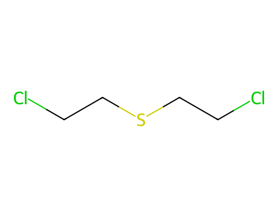
Ypériteà dessiner
pas de nom commercial au cours
Moutarde au soufre — Premier agent alkylant découvert (gaz de combat)
Noyau : S central portant deux chaînes 2-chloroéthyle : Cl-CH2-CH2-S-CH2-CH2-Cl
Mécanisme : Agent alkylant : pontage covalent des guanines de l'ADN (même principe que les moutardes azotées).
Structure-activité
Ancêtre des moutardes : en remplaçant le soufre par un azote on obtient les « moutardes à l'azote », moins toxiques.
Ypérite = Ypres (1917) ; S au centre, deux bras chloroéthyle.
Noyau : N,N-bis(2-chloroéthyl)aniline + chaîne acide butanoïque en para (acide 4-phénylbutyrique)
Mécanisme : Moutarde à l'azote : l'azote forme un ion aziridinium qui alkyle le N7 de la guanine ; les deux bras chloroéthyle créent un pontage bicaténaire covalent stable de l'ADN, qui ne peut plus se dérouler ni se répliquer.
Structure-activité
Moutarde azotée (N au lieu du S de l'ypérite) ; en para du cycle : chaîne (CH2)3-COOH. Le melphalan porte à la place une chaîne alanine (CH2-CH(NH2)-COOH).
chlorAMBUcil : la chaîne BUtyrique (4 C avec le COOH).
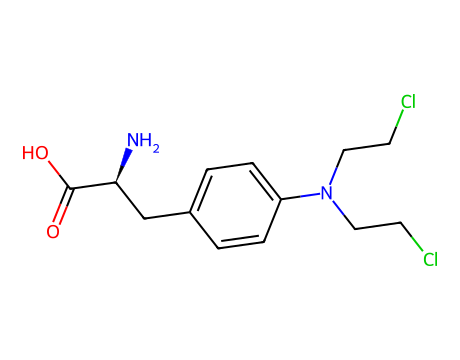
Melphalanà dessiner
ALKERAN®
Moutardes azotées — Moutarde azotée dérivée de la phénylalanine
Noyau : Phénylalanine portant en para un groupe N,N-bis(2-chloroéthyl)amino
Mécanisme : Moutarde à l'azote : alkylation et pontage bicaténaire des guanines (N7) de l'ADN.
Structure-activité
Même moutarde aromatique que le chlorambucil, mais la chaîne est celle d'un acide aminé (CH2-CH(NH2)-COOH) : caractère amphotère plus marqué, d'où une meilleure solubilité dans les acides.
MELPHALAN ~ PHénylALAniNe : l'acide aminé porte la moutarde.
Alkylsulfonates 1 molécule
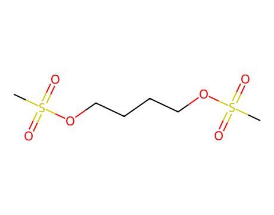
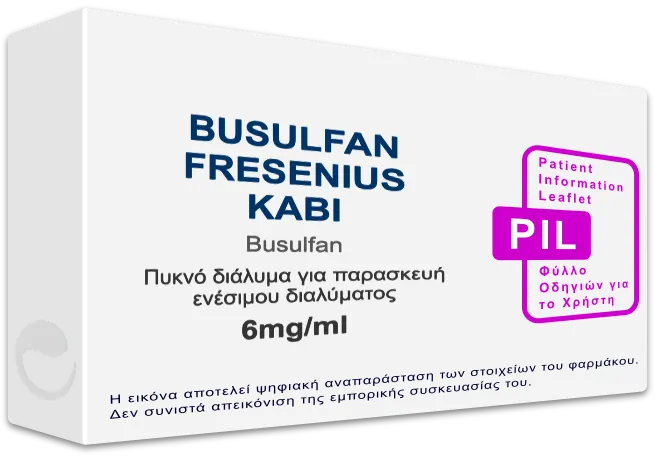
BUSULFAN FRENIUS KABI®
Busulfanà reconnaître
BUSULFAN FRENIUS KABI®
Alkylsulfonates — Seul représentant des alkylsulfonates
Mécanisme : Alkylsulfonate : agit selon un mécanisme similaire aux moutardes à l'azote (alkylation/pontage de l'ADN).
Indications : Traitement de conditionnement préalable à une greffe conventionnelle de cellules souches hématopoïétiques
Structure-activité
Pas d'atome de chlore ni d'azote : ce sont les deux groupes méthanesulfonate (mésylate) qui partent et permettent l'alkylation.
BUSulfan = BUtane + 2 SULFONates.
Phosphoramides 3 molécules
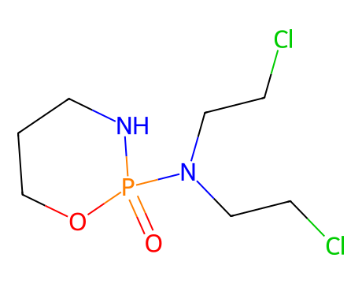
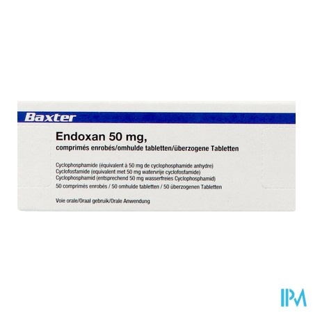
ENDOXAN®
Cyclophosphamideà reconnaître
ENDOXAN®
Phosphoramides — Oxazaphosphorine (moutarde azotée sur un P)
Noyau : Cycle 1,3,2-oxazaphosphinane (P=O, NH, O) portant une bis(2-chloroéthyl)amine exocyclique sur le phosphore
Mécanisme : Phosphoramide : se fixerait à la phosphoramidase, enzyme en proportion anormalement élevée dans certains types de cellules cancéreuses ; une fois fixé, il alkyle sélectivement les cellules cibles.
Indications : (à titre informatif) Lymphomes malins hodgkiniens et non hodgkiniens, Myélomes multiples, Leucémies aiguës, Tumeurs solides et leurs métastases : cancers pulmonaires à petites cellules, mammaires, ovariens, prostatiques, sarcomes
Structure-activité
Les deux bras chloroéthyle sont sur le même N exocyclique ; chez l'ifosfamide (isomère de position), un bras est sur le N du cycle et l'autre sur le N exocyclique.
CYCLOphosphamide : les 2 Cl sont « hors du cycle », sur le même N.
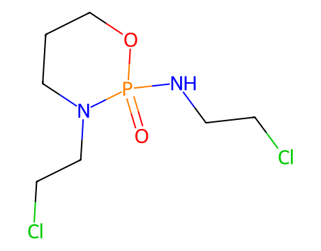
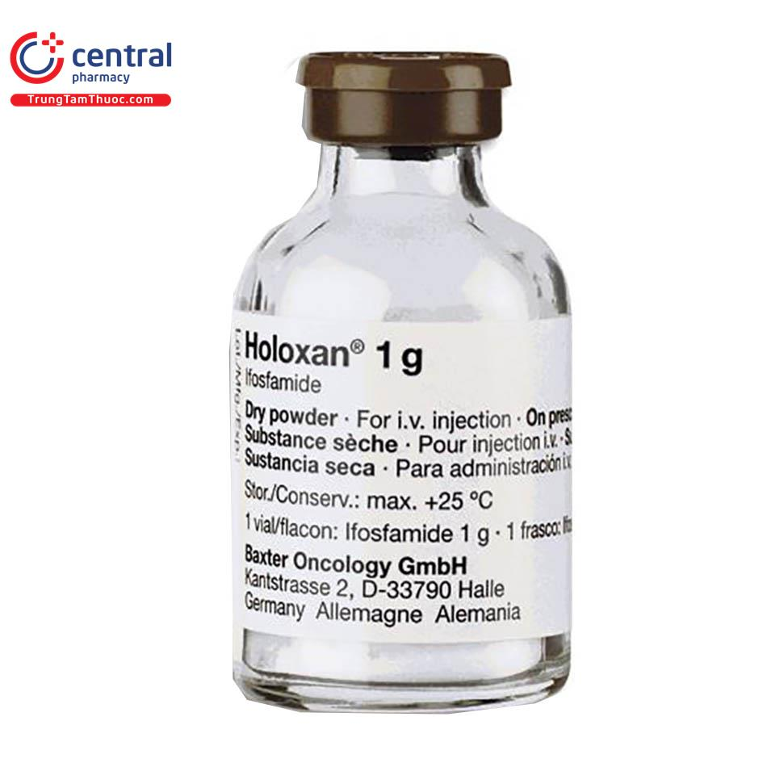
HOLOXAN®
Ifosfamideà reconnaître
HOLOXAN®
Phosphoramides — Oxazaphosphorine, isomère de position du cyclophosphamide
Noyau : Cycle 1,3,2-oxazaphosphinane ; un 2-chloroéthyle sur le N du cycle et un sur le NH exocyclique
Mécanisme : Phosphoramide : fixation à la phosphoramidase des cellules cancéreuses puis alkylation sélective.
Structure-activité
Isomère de position du cyclophosphamide : un bras chloroéthyle est déplacé sur l'azote du cycle.
IFOsfamide : « I » comme Isomère, un Cl de chaque côté.
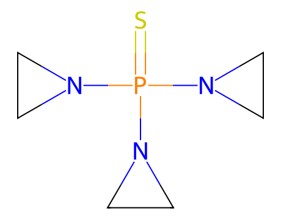
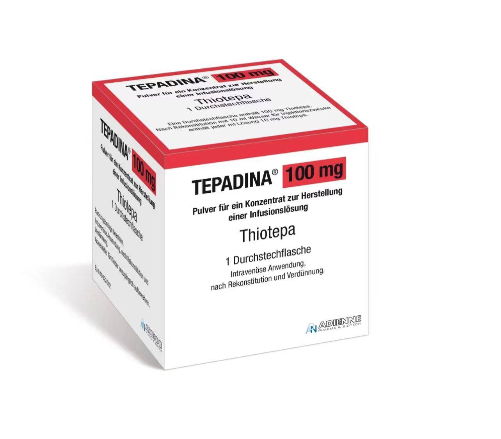
TEPADINA®
Thiotepaà reconnaître
TEPADINA®
Phosphoramides — Éthylène-imine (aziridines) sur un P=S
Noyau : Thiophosphoramide : P=S portant trois cycles aziridine (éthylène-imines)
Mécanisme : Phosphoramide se fixant à la phosphoramidase ; les éthylène-imines agissent selon un mécanisme similaire aux moutardes à l'azote.
Structure-activité
Pas de chlore : ce sont les trois aziridines (éthylène-imines) qui alkylent. Seul des trois phosphoramides soluble dans l'éthanol et les solvants organiques.
THIO-TEPA : un S (thio) et trois triangles aziridine.
Moutardes azotées 1 molécule
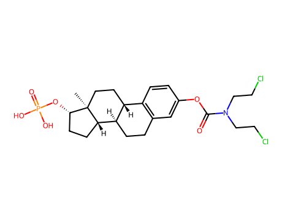
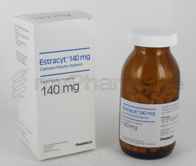
ESTRACYT® (ancien)
Estramustineà reconnaître
ESTRACYT® (ancien)
Moutardes azotées — Moutarde azotée vectorisée par l'estradiol
Noyau : Estradiol : carbamate de bis(2-chloroéthyl)amine sur le 3-OH phénolique, phosphate sur le 17-OH
Mécanisme : Double effet : alkylant de type moutarde à l'azote (fonction bis-chloréthylamine) et, après hydrolyse, effet œstrogène par libération d'estradiol.
Indications : Cancer de la prostate
Structure-activité
Phosphate d'estradiol substitué par un groupe bis-chloréthylamine : l'estradiol sert de vecteur vers les tissus hormono-dépendants.
ESTRA-MUSTINE = ESTRAdiol + MUSTard (moutarde).
Nitrosourées 2 molécules
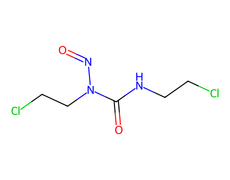
Carmustineà reconnaître
pas de nom commercial au cours
Nitrosourées — N-nitrosourée bis-chloroéthylée
Noyau : Urée N-nitrosée portant deux 2-chloroéthyles (un sur le N nitrosé, un sur le NH)
Mécanisme : Agent alkylant de type N-nitrosourée.
Indications : Antimitotique de choix des tumeurs du système nerveux central
Structure-activité
Nitrosourée lipophile : franchit la barrière hémato-méningée.
CARmustine : deux Cl, un de chaque côté de l'urée.
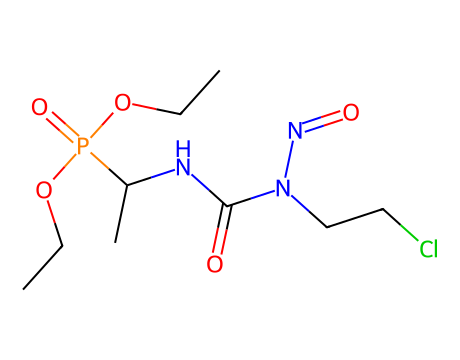
Fotémustineà reconnaître
pas de nom commercial au cours
Nitrosourées — N-nitrosourée phosphonée
Noyau : N-(2-chloroéthyl)-N-nitrosourée dont le NH porte un 1-(diéthoxyphosphoryl)éthyle
Mécanisme : Agent alkylant de type nitrosourée.
Structure-activité
Un seul 2-chloroéthyle (sur le N nitrosé) ; l'autre côté porte un phosphonate de diéthyle (« FO » = phosphore).
FOtémustine = phosphOnate (P) sur la nitrosourée.
Dérivés du platine 3 molécules · 1 à dessiner
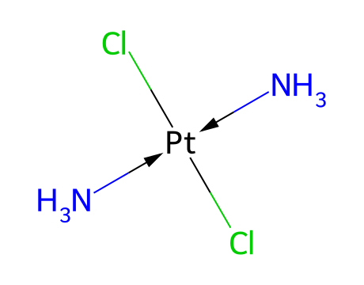
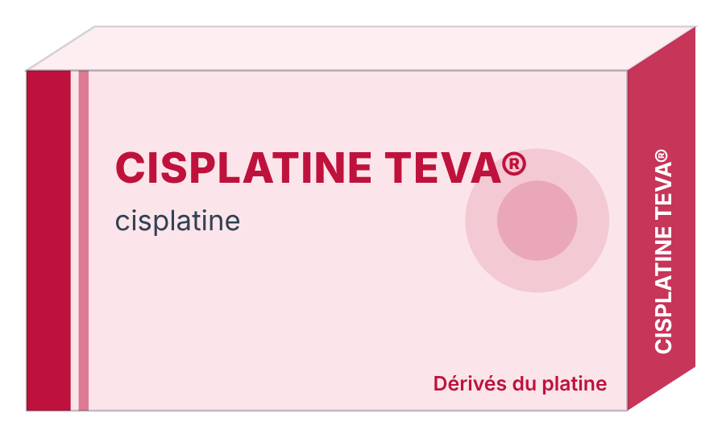
CISPLATINE TEVA®
Cisplatineà dessiner
CISPLATINE TEVA®
Dérivés du platine — Complexe plan carré de Pt(II) : 2 NH3 + 2 Cl en cis
Noyau : Pt2+ au centre d'un carré plan : deux NH3 (peu labiles) et deux Cl (labiles) du même côté (cis)
Mécanisme : Le platine se fixe par liaisons covalentes au DNA : N7 et N1 de l'adénine, N3 de la cytidine, N7 de la guanine ; formation de monoadduits, de ponts intra- et inter-brins et de ponts ADN-protéine.
Structure commune des platines actifs : Pt(II) lié à 2 substituants azotés peu labiles et 2 substituants labiles (chlorure ou oxygène). Dans l'eau, les Cl sont remplacés par H2O/OH (formes aquo réactives).
CIS-platine : les 2 NH3 du même côté ; découverte par hasard (électrodes de Pt, Rosenberg 1965).
Noyau : HS-CH2-CH2-SO3Na : thiol + sulfonate de sodium
Mécanisme : Se lie par son SH à l'acroléine formée lors de doses élevées de cisplatine, cyclophosphamide et ifosfamide ; l'acroléine, éliminée à concentration élevée dans l'urine, est très toxique pour la muqueuse vésicale.
Indications : Prévention de la toxicité vésicale de l'acroléine (doses élevées de cisplatine, cyclophosphamide, ifosfamide) : UROMITEXAN® IV, En aérosol : encombrement bronchique, en particulier de la mucoviscidose (MISTABRON®)
Structure-activité
Le groupe SH réagit avec l'acroléine pour donner un produit non toxique ; le sulfonate rend la molécule très hydrophile (éliminée dans l'urine).
MESNA = MErcapto-Sulfonate de NAtrium ; le SH « éponge » l'acroléine dans la vessie.
Noyau : Deux pipérazine-2,6-diones reliées par un propane-1,2-diyle (énantiomère S)
Mécanisme : 1) Chélation du fer (surtout par son métabolite à cycle ouvert) réduisant le stress oxydatif dépendant du fer responsable de la cardiotoxicité des anthracyclines ; 2) inhibition de la topo-isomérase II.
Indications : Patients cancéreux traités par anthracyclines (notamment épirubicine et doxorubicine) pour éviter leurs effets cardiotoxiques
Structure-activité
Son métabolite à cycle ouvert chélate le fer.
DEXRAzoxane protège le cœur : il « DÉshabille » les anthracyclines de leur fer.
Antifoliques 3 molécules · 1 à dessiner
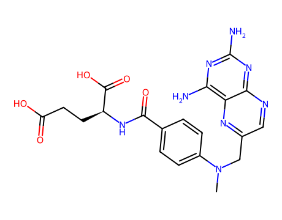
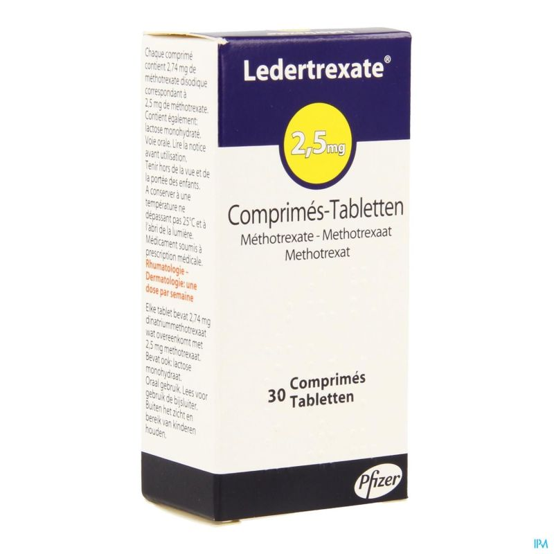
LEDERTREXATE®
Méthotrexateà dessiner
EMTREXATE®, LEDERTREXATE®
Antifoliques — Inhibiteur de la dihydrofolate réductase
Mécanisme : Inhibiteur non spécifique de la dihydrofolate réductase (cellules bactériennes, cancéreuses et normales) : empêche la réduction de l'acide folique en acide tétrahydrofolique puis en acide folinique actif, ce qui perturbe la synthèse des bases puriques (adénine, guanine) et de la thymidine. C'est un antifolique.
Indications : Antitumoral, À faibles doses : cas graves de psoriasis ou d'arthrite rhumatoïde
Structure-activité
Diffère de l'acide folique par 2 points : NH2 en 4 au lieu du C=O/OH (4-amino) et N10 méthylé (N-CH3).
MéthoTREXATE = acide folique + 1 NH2 + 1 MÉTHyle.
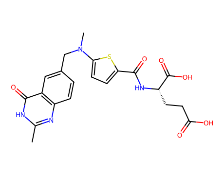
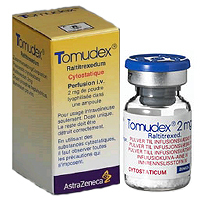
TOMUDEX®
Raltitrexedà reconnaître
TOMUDEX®
Antifoliques — Inhibiteur de la thymidylate synthase
Mécanisme : Antifolique : inhibe la thymidylate synthase, la dihydrofolate réductase et la glycinamide ribonucléotide formyltransférase.
Indications : Mésothéliome pleural malin non résécable, Cancer bronchique non à petites cellules ayant déjà été traité par chimiothérapie
Structure-activité
Apparenté à l'acide folique : la ptéridine devient une pyrrolopyrimidine et le pont CH2-NH devient CH2-CH2.
PEMetrexed = Plèvre (mésothéliome) et Poumon.
Analogues de la purine 3 molécules
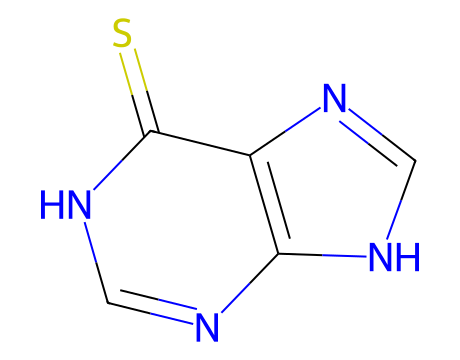
Mercaptopurineà reconnaître
PURI-NETHOL®
Analogues de la purine — Thiopurine
Noyau : Purine portant un soufre en 6 (tautomères thione C=S / thiol SH)
Mécanisme : Par analogie de structure avec les purines, empêche la formation de nucléotides et provoque l'incorporation de désoxyribonucléotides frauduleux.
Structure-activité
Analogue de l'hypoxanthine où le O en 6 est remplacé par S ; la tioguanine porte en plus un NH2 en 2 (analogue de la guanine).
MERCAPTO = SH en 6 de la purine.
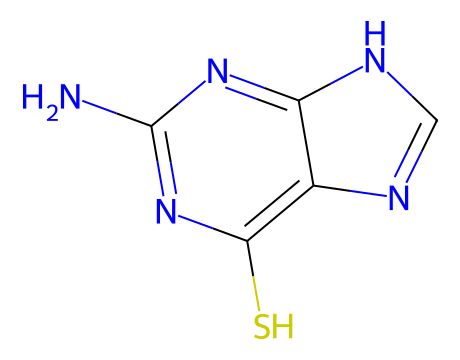
Tioguanineà reconnaître
LANVIS®
Analogues de la purine — Thiopurine (analogue de la guanine)
Noyau : Guanine dont le C=O en 6 est remplacé par C-SH
Mécanisme : Analogue des purines : empêche la formation de nucléotides et provoque l'incorporation de désoxyribonucléotides frauduleux.
Structure-activité
Guanine avec S à la place du O en 6 = mercaptopurine + NH2 en 2.
THIO-GUANINE : la guanine qui a troqué son O contre un S.
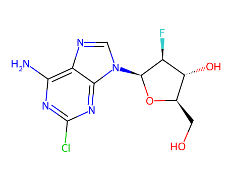
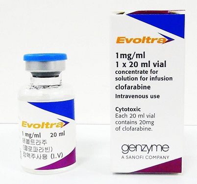
EVOLTRA®
Clofarabineà reconnaître
EVOLTRA®
Analogues de la purine — Analogue de la cladribine (2'-fluoro arabino)
Mécanisme : Entre par diffusion et diffusion facilitée ; monophosphorylée par la désoxycytidine kinase (dCK) puis phosphorylée en triphosphate actif, qui termine l'élongation de l'ADN et inhibe sa réparation (inhibition compétitive des ADN polymérases) ; inhibe aussi la ribonucléotide réductase (baisse des dNTP) et induit l'apoptose via la mitochondrie (libération du cytochrome c).
Indications : Leucémie aiguë lymphoblastique de l'enfant réfractaire aux autres traitements
Structure-activité
Structure proche de la cladribine (Cl en 2) avec en plus un F en 2' (configuration arabino).
CLOfarabine = CL (cladribine) + F (fludarabine) : la fusion des deux.
Analogues de la pyrimidine 4 molécules · 1 à dessiner
Analogues de la pyrimidine — Base pyrimidique fluorée
Noyau : Uracile portant un fluor en position 5
Mécanisme : Inactif en tant que tel ; métabolisé en fluorodésoxyuridine monophosphate (5-FdUMP) et fluorodésoxyuridine triphosphate (5-FdUTP) incorporés dans l'ADN.
Indications : Tumeurs du tube digestif, du sein, de l'ovaire et leurs métastases, Carcinomes épidermoïdes des voies aérodigestives supérieures (en association), Crème (EFUDIX®) : kératoses solaires, maladie de Bowen, condylomes acuminés, Avec l'oxaliplatine et l'acide folique : carcinome colorectal
Structure-activité
Uracile dont le H en 5 (là où la thymidylate synthase met le méthyle de la thymine) est remplacé par F.
5-FU : F en 5 de l'Uracile.
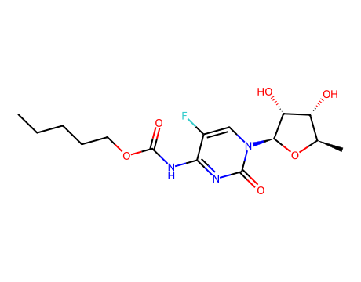
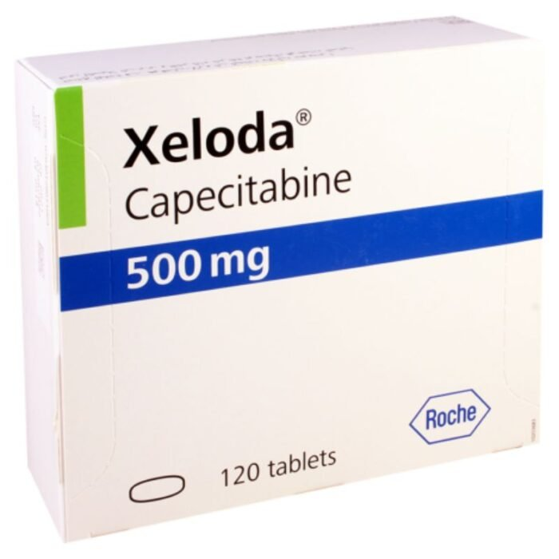
XELODA®
Capécitabineà reconnaître
XELODA®, CAPECITABINE ACCORD®
Analogues de la pyrimidine — Prodrogue orale du 5-fluorouracile
Noyau : 5-fluorocytidine 5'-désoxy (CH3 à la place du CH2OH) avec carbamate de pentyle sur le NH en 4
Mécanisme : Prodrogue métabolisée après administration orale en 5-fluorouracile.
Indications : Cancer colorectal métastatique, Cancer du sein localement avancé ou métastatique
Structure-activité
Prodrogue : 5'-désoxyribose + carbamate de n-pentyle ; transformée par une enzyme tumorale en 5-fluorouracile.
CAPEcitabine = la CAPE (déguisement) oral du 5-FU.
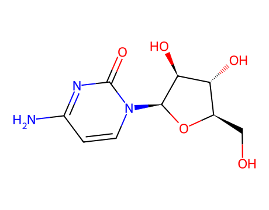
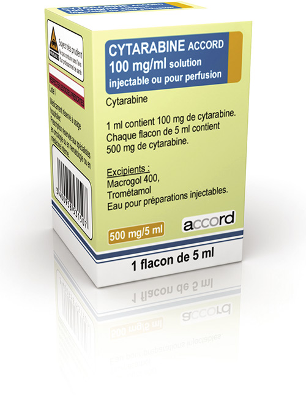
CYTARABINE ACCORD®
Cytarabineà reconnaître
CYTARABINE ACCORD®, CYTOSAR®
Analogues de la pyrimidine — Analogue de la cytidine (arabinoside)
Noyau : Cytosine + arabinose
Mécanisme : Convertie en cytarabine triphosphate incorporée dans l'ADN ; également inhibiteur de l'ADN polymérase.
Indications : Leucémies aiguës myéloïdes et lymphoblastiques (antimétabolite le plus utilisé)
Structure-activité
Par rapport à la cytidine : arabinose au lieu du ribose (OH en 2' inversé).
Analogues de la pyrimidine — Analogue de la désoxycytidine difluorée
Noyau : Cytosine + 2'-désoxy-2',2'-difluororibose
Mécanisme : S'incorpore dans le métabolisme des bases pyrimidiques ; métabolisée en dérivés mono-, di- et triphosphates qui perturbent la synthèse de l'ADN par divers mécanismes.
Indications : Cancer bronchique non à petites cellules localement avancé ou métastatique, Adénocarcinome du pancréas, Cancer de la vessie, Cancer du sein métastatique
Structure-activité
Deux atomes de fluor remplacent deux atomes d'hydrogène en 2' du désoxyribose.
GEMcitabine = GÉMeaux : 2 F jumeaux en 2'.
Autres antimétabolites 1 molécule · 1 à dessiner
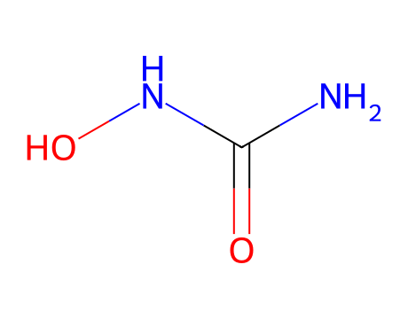
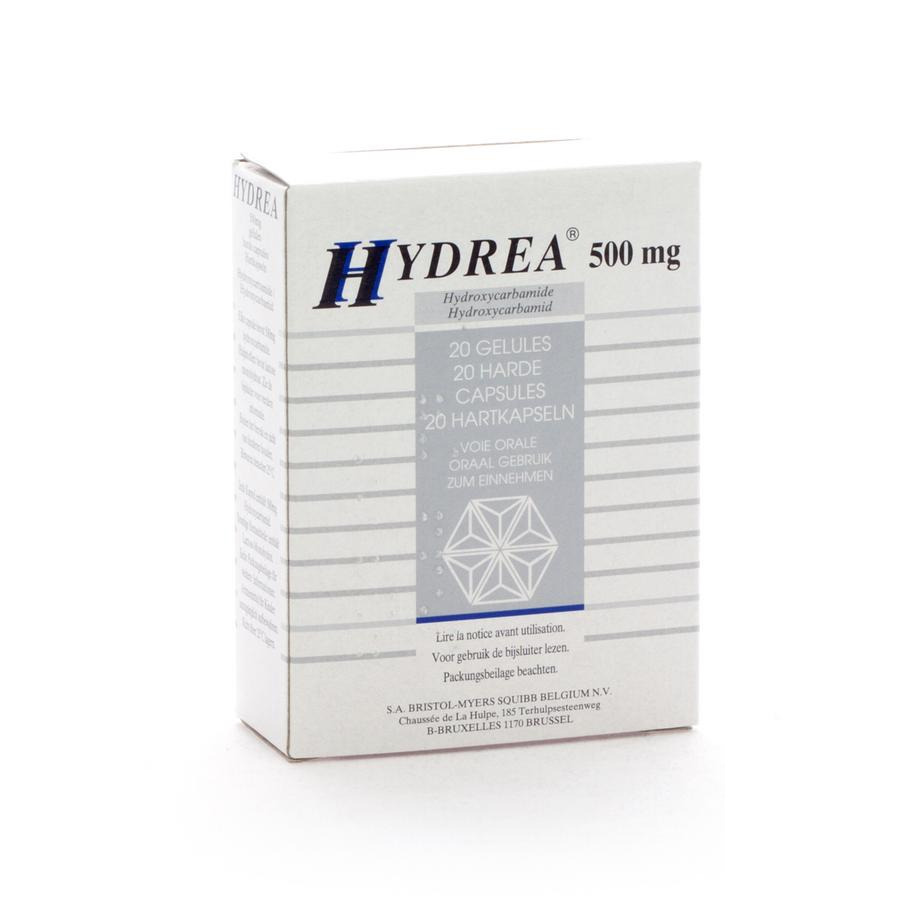
HYDREA®
Hydroxyuréeà dessiner
HYDREA®, SIKLOS®
Autres antimétabolites — Inhibiteur de la ribonucléotide réductase
Noyau : H2N-CO-NHOH : urée portant un OH sur un azote
Mécanisme : Inhibe la ribonucléotide-diphosphate réductase (conversion des ribonucléotides en désoxyribonucléotides) : inhibition immédiate de la synthèse de l'ADN sans interférer avec celle de l'ARN ni des protéines. Dans la drépanocytose : augmentation de l'HbF (qui empêche la polymérisation de l'HbS et la falciformation), baisse des neutrophiles (effet le mieux corrélé à la réduction des crises), augmentation de l'eau et de la déformabilité des hématies, moindre adhésion à l'endothélium.
Molécule très simple (synthétisée il y a environ 150 ans) : une urée N-hydroxylée.
HYDREA : H2N-CO-NH-OH, l'urée qui a « pris un OH ».
Antitumoraux : intercalants, inhibiteurs de topo-isomérases, inhibiteurs des microtubules et antihormonaux17 concepts · 29 molécules (3 à dessiner) · p. 239-251
Concepts à comprendre (17)
Agent intercalant
Un médicament à structure moléculaire plane peut s'intercaler entre deux brins de DNA. L'intercalation seule ne suffit généralement pas : le médicament doit aussi altérer chimiquement le DNA, le plus souvent par formation de radicaux libres, et inhiber sa réplication ou sa transcription. La proflavine (antibactérienne) en est un exemple.
Pourquoi les psoralènes illustrent-ils bien que l'intercalation seule ne suffit pas ?
Parce qu'à l'obscurité ils s'intercalent dans le DNA sans l'altérer ; ce n'est qu'à la lumière qu'ils l'altèrent chimiquement (adduits, radicaux) et deviennent actifs.
Antibiotiques antitumoraux
Parmi les agents intercalants figurent les antibiotiques antitumoraux : les anthracyclines (d'origine fongique, Streptomyces) et la bléomycine (Streptomyces verticillus, pseudo-intercalant).
Pourquoi parle-t-on d'« antibiotiques » pour des anticancéreux ?
Parce qu'ils sont produits par des micro-organismes (Streptomyces), comme les antibiotiques classiques, mais sont utilisés pour leur action sur le DNA des cellules tumorales.
Anthracyclines
Dérivés d'origine fongique (Streptomyces peucetius et coeruloribidus) : daunorubicine, doxorubicine, épirubicine, idarubicine. Elles s'intercalent entre les brins de DNA, l'hydrolysent à la manière des nucléases et peuvent entraîner des altérations membranaires. Ce sont aussi des inhibiteurs de topo-isomérase II à effet intercalant. Effets indésirables : myélosuppression et surtout cardiomyopathies, même après l'arrêt.
Pourquoi faut-il rester vigilant sur le cœur d'un patient même après la fin d'une chimiothérapie par anthracycline ?
Parce que les cardiomyopathies induites par les anthracyclines peuvent apparaître même après l'arrêt du traitement.
Idarubicine : pas de 4-méthoxy
L'idarubicine ne possède pas de groupement méthoxy en position 4 (R = H) : elle est donc plus lipophile et mieux résorbée que la daunorubicine.
Pourquoi la suppression d'un OCH3 rend-elle l'idarubicine mieux résorbée ?
Le cours relie l'absence du méthoxy en 4 à une lipophilie plus grande, et une molécule plus lipophile traverse mieux les membranes, d'où une meilleure résorption.
Intercalants synthétiques
À côté des anthracyclines naturelles, la mitoxantrone (dérivé de l'anthracycline) et l'amsacrine (dérivé de l'acridine) sont des agents intercalants de synthèse. L'amsacrine est en plus inhibiteur de la topo-isomérase II.
Pourquoi la mitoxantrone et l'amsacrine peuvent-elles s'intercaler ?
Parce qu'elles possèdent un noyau aromatique plan (anthraquinone pour la mitoxantrone, acridine pour l'amsacrine), condition structurale de l'intercalation.
Bléomycine, pseudo-intercalant
La bléomycine, élaborée par Streptomyces verticillus, est constituée de plusieurs fractions polypeptidiques (A2 majoritaire). C'est un pseudo-intercalant capable de provoquer une cassure au niveau de l'ADN.
Pourquoi la bléomycine n'est-elle qu'un « pseudo »-intercalant ?
Parce que ce n'est pas une petite molécule entièrement plane comme les anthracyclines, mais un gros glycopeptide qui provoque surtout des cassures de l'ADN.
Produits photosensibilisants
Les psoralènes sont photosensibilisants : sous l'influence de la lumière naturelle ou artificielle, ils sont transformés en molécules très réactives, pouvant causer des effets indésirables mais aussi avoir, dans des conditions particulières, un intérêt thérapeutique.
Pourquoi un même phénomène (photosensibilisation) est-il à la fois un risque et un traitement ?
Parce que les molécules réactives formées à la lumière altèrent le DNA : utile en contrôlé (PUVA) pour freiner l'épiderme, nuisible en exposition non maîtrisée.
Photochimiothérapie (PUVA)
Traitement combinant un psoralène et une exposition à la lumière UVA (320-380 nm ; les UVB sont entre 290 et 320 nm). Sous lumière, les psoralènes intercalés forment des adduits covalents intra- ou interbrins avec les bases, même sans oxygène ; avec oxygène, des radicaux superoxydes altèrent en plus le DNA. La concentration épidermique est maximale 2 à 4 h après la prise orale et persiste environ 8 h.
Pourquoi programme-t-on l'exposition UVA 2 à 4 h après la prise du psoralène ?
Parce que l'effet de la lumière est d'autant plus important que la concentration de psoralène dans les cellules épidermiques est élevée, et que ce pic survient en moyenne 2 à 4 h après la prise.
Psoriasis
Maladie de peau d'origine mal connue, en partie génétique, touchant 2 % de la population. L'épiderme se renouvelle en 4 à 6 jours au lieu de 3 semaines, ce qui génère des inflammations localisées ; les cellules s'accumulent en squames blanches, inoffensives mais inesthétiques. Avec le PUVA, l'altération du DNA réduit la production de cellules épidermiques à l'origine des squames.
Pourquoi un agent qui altère le DNA est-il utile dans le psoriasis ?
Parce que le problème est un renouvellement épidermique trop rapide : en inhibant la réplication du DNA, on réduit la production des cellules à l'origine des squames.
Vitiligo
Maladie de l'épiderme caractérisée par des taches blanches qui apparaissent et s'étendent sur le corps. Avec le PUVA, on recherche la stimulation des mélanocytes ; mais en absence de mélanocytes, on n'obtient pas un brunissement mais des brûlures.
Pourquoi le PUVA peut-il brûler au lieu de repigmenter dans le vitiligo ?
Parce que l'effet recherché passe par la stimulation des mélanocytes ; là où ils sont absents, il ne reste que l'agression photochimique de la peau.
Topo-isomérases I et II
Les ADN topo-isomérases contrôlent la structure topologique de l'ADN en générant des coupures transitoires et en faisant passer des segments d'ADN à travers ces coupures avant de les refermer (réplication, transcription, séparation des chromosomes). La topo-isomérase I coupe et ressoude un seul brin ; la topo-isomérase II coupe les deux brins et les ressoude dans une conformation différente après modification de la torsion.
Pourquoi bloquer une topo-isomérase est-il cytotoxique ?
Parce que ces enzymes sont essentielles à la réplication, la transcription et la séparation des chromosomes : les inhiber laisse des cassures de l'ADN et empêche la division des cellules tumorales.
Inhibiteurs de topo-isomérase I : camptothécines
La camptothécine (Camptotheca acuminata) et ses analogues ont des effets antinéoplasiques certains mais des effets indésirables importants ; on a développé des dérivés mieux tolérés : irinotécan (hémisynthétique, cancers colorectaux métastasés) et topotécan (carcinome ovarien récidivant après échec du platine).
Pourquoi utilise-t-on l'irinotécan plutôt que la camptothécine elle-même ?
Parce que la camptothécine, efficace, a des effets indésirables importants ; l'irinotécan est un dérivé hémisynthétique conçu pour être mieux toléré.
Inhibiteurs de topo-isomérase II : avec ou sans intercalation
Les inhibiteurs de topo-isomérase II antinéoplasiques se divisent en deux groupes : ceux qui ont en outre un effet intercalant (amsacrine, anthracyclines) et ceux qui n'en ont pas (étoposide, téniposide, dérivés hémi-synthétiques de la podophyllotoxine).
Pourquoi l'étoposide n'agit-il pas comme la podophyllotoxine dont il dérive ?
Parce que la podophyllotoxine bloque la mitose en métaphase, alors que ses dérivés (étoposide, téniposide) provoquent des cassures de l'ADN liées à la topo-isomérase II.
Inhibiteurs des microtubules : deux sens opposés
Selon leur pharmacocinétique et leur affinité tissulaire, les médicaments agissant sur la tubuline servent d'antinéoplasiques, d'antihelminthiques (mébendazole) ou d'antigoutteux (colchicine). En oncologie : les alcaloïdes de la pervenche (vinblastine…) inhibent la polymérisation de la tubuline en microtubules ; les taxoïdes empêchent la dépolymérisation des microtubules.
Pourquoi deux mécanismes opposés (bloquer la polymérisation ou la dépolymérisation) aboutissent-ils au même résultat ?
Parce que la mitose exige un fuseau dynamique : l'empêcher de se former (vinca) ou le figer (taxanes, complexe stable) bloque dans les deux cas la division cellulaire.
Aromatase
Enzyme du groupe des cytochromes P450 qui convertit les androgènes surrénaliens comme la testostérone en œstrogènes. L'inhiber, enzyme spécifique de la synthèse des estrogènes, est une excellente solution pour réduire les taux d'œstrogènes dans certains cancers hormonodépendants.
Pourquoi les inhibiteurs de l'aromatase sont-ils réservés aux femmes ménopausées dans le cancer du sein ?
Le cours les indique dans le carcinome mammaire à récepteurs hormonaux chez la femme ménopausée : après la ménopause, les œstrogènes proviennent de la conversion des androgènes par l'aromatase, que ces molécules bloquent.
Inhibiteurs de l'aromatase stéroïdiens vs non stéroïdiens
L'exémestane (AROMASIN®) est un inhibiteur stéroïdien de l'aromatase ; le létrozole (FEMARA®) et l'anastrozole (ARIMIDEX®) sont non stéroïdiens (triazolés), utilisés per os en cas de récidive après antioestrogènes. L'aminoglutéthimide, ancien et non spécifique, diminue aussi la synthèse des corticoïdes.
Pourquoi l'aminoglutéthimide impose-t-il l'ajout d'un glucocorticoïde ?
Parce que son inhibition n'est pas spécifique : il diminue aussi la production des gluco- et minéralocorticoïdes, et le déficit en cortisol doit être compensé.
SERM (modulateur sélectif des récepteurs aux estrogènes)
Le tamoxifène est un SERM : agoniste sur les récepteurs aux estrogènes du squelette et du foie, antagoniste sur ceux du tissu mammaire et agoniste partiel au niveau de l'endomètre. Il est utilisé chez la femme en pré- ou postménopause dans le cancer du sein à récepteurs hormonaux positifs. Bazédoxifène, raloxifène (ostéoporose) et clomifène (PMA) sont vus au tome 3.
Pourquoi le tamoxifène peut-il être utilisé avant la ménopause, contrairement aux inhibiteurs de l'aromatase ?
Parce qu'il ne bloque pas la synthèse des œstrogènes : il bloque leur récepteur dans le tissu mammaire (effet antagoniste), quelle que soit leur origine.
Intercalants (acridines) 1 molécule
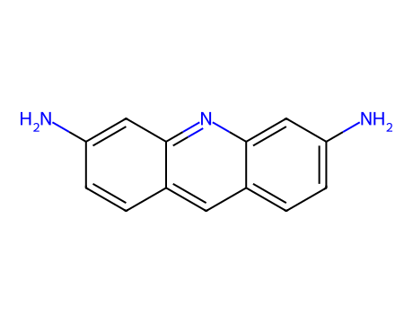
Proflavineà reconnaître
pas de nom commercial au cours
Intercalants (acridines) — Exemple d'intercalant antibactérien
Noyau : Acridine plane (3 cycles fusionnés, N central) portant 2 NH2 en 3 et 6
Mécanisme : Intercalant : structure plane qui s'insère entre deux paires de bases du DNA (p.239).
Indications : Substance antibactérienne (p.239)
Structure-activité
Exemple type de structure moléculaire plane capable de s'intercaler entre deux brins de DNA (p.239).
PROFLAVINE = acridine + 2 NH2 : le modèle de l'intercalant plat.
Mécanisme : Intercalant : structure plane qui s'intercale entre les brins de DNA et l'hydrolyse à la manière des nucléases ; peut aussi entraîner des altérations membranaires (p.239). Les anthracyclines sont aussi des inhibiteurs de la topo-isomérase II à effet intercalant (p.244).
Indications : Leucémie (p.240)
Structure-activité
R = OCH3 en position 4 ; R' = H (chaîne latérale C(=O)CH3) (p.240). La doxorubicine ne diffère que par R' = OH (C(=O)CH2OH).
DAUNO = la de base (R' = H) ; DOXO = + OH (R' = OH).
Mécanisme : Intercalant : structure plane qui s'intercale entre les brins de DNA et l'hydrolyse à la manière des nucléases ; peut aussi entraîner des altérations membranaires (p.239). Les anthracyclines sont aussi des inhibiteurs de la topo-isomérase II à effet intercalant (p.244).
Indications : Tumeurs solides et hémopathies malignes (p.240)
Structure-activité
R = OCH3 en 4 ; R' = OH (chaîne C(=O)CH2OH) : c'est le OH de R' qui la distingue de la daunorubicine (p.240). Son épimère au niveau du C-OH de l'aminosucre est l'épirubicine (p.239).
DOXO = « dOXy » en plus : un OH de plus que DAUNO (R' = OH).
Noyau : Même squelette que la doxorubicine ; l'OH de l'aminosucre (C4') est inversé
Mécanisme : Intercalant : structure plane qui s'intercale entre les brins de DNA et l'hydrolyse à la manière des nucléases ; peut aussi entraîner des altérations membranaires (p.239). Les anthracyclines sont aussi des inhibiteurs de la topo-isomérase II à effet intercalant (p.244).
Indications : Tumeurs solides et hémopathies malignes (p.240)
Structure-activité
Épimère de la doxorubicine au niveau du C-OH de l'aminosucre (p.239). Pas de structure dessinée dans le cours.
Noyau : Squelette de la daunorubicine sans le méthoxy en 4
Mécanisme : Intercalant : structure plane qui s'intercale entre les brins de DNA et l'hydrolyse à la manière des nucléases ; peut aussi entraîner des altérations membranaires (p.239). Les anthracyclines sont aussi des inhibiteurs de la topo-isomérase II à effet intercalant (p.244).
Indications : Leucémie (p.240)
Structure-activité
R = H ; R' = H : pas de groupement méthoxy en position 4 → plus lipophile et donc mieux résorbée (p.240).
IDA = « I Don't hAve » de méthoxy → plus lipophile.
Intercalants synthétiques 2 molécules
MITOXANTRONE SANDOZ®
Mitoxantroneà reconnaître
MITOXANTRONE SANDOZ®
Intercalants synthétiques — Dérivé de l'anthracycline (anthracènedione)
Noyau : Anthraquinone 5,8-dihydroxylée portant en 1 et 4 deux chaînes –NH–CH2CH2–NH–CH2CH2–OH (pas de sucre)
Indications : Leucémies aiguës myéloblastiques (p.240), Lymphomes non hodgkiniens (p.240), Cancer du sein métastatique (p.240), Tumeurs solides et hémopathies malignes (p.240)
Structure-activité
Produit de synthèse dérivé de l'anthracycline : noyau anthraquinone plan, sans aminosucre, avec deux chaînes aminoalcool symétriques (p.240).
MITOXANTRONE : anthr-ONE plate + 2 « bras » symétriques, pas de sucre.
Amsacrineà reconnaître
pas de nom commercial au cours
Intercalants synthétiques — Dérivé de l'acridine
Noyau : Acridine substituée en 9 par une anilide méthoxylée portant une méthanesulfonamide
Mécanisme : Agent intercalant synthétique ET inhibiteur de la topo-isomérase II (p.240, 244).
Indications : Leucémies (p.240)
Structure-activité
Dérivé de l'acridine (comme la proflavine) : 9-anilinoacridine avec OCH3 et NH–SO2CH3 sur le phényle (p.240).
Pseudo-intercalants (antibiotiques antitumoraux) — Glycopeptide de Streptomyces verticillus
Noyau : Glycopeptide : pyrimidine aminée, imidazole, bithiazole et deux sucres (dont un carbamoylé)
Mécanisme : Pseudo-intercalant capable de provoquer une cassure au niveau de l'ADN (p.241).
Indications : Carcinomes épidermoïdes (p.241), Cancers ORL (p.241), Cancers de la peau, de la vessie et du testicule (p.241)
Structure-activité
Constituée de plusieurs fractions polypeptidiques ; la bléomycine A2 en est le constituant majoritaire ; utilisée sous forme de sulfate (p.241).
BLÉOmycine : bithiazole « pseudo » plat qui casse l'ADN.
Psoralènes (furanocoumarines) 3 molécules · 2 à dessiner
Psoralèneà dessiner
pas de nom commercial au cours
Psoralènes (furanocoumarines) — Noyau de base
Noyau : Furanocoumarine linéaire : furane accolé (positions 6-7) à une coumarine (benzopyran-2-one) ; numérotation 1 à 8 sur la coumarine, 1' à 5' sur le furane
Mécanisme : Furanocoumarine plane qui s'intercale dans le DNA sans liaison covalente à l'obscurité ; sous lumière (UVA 320-380 nm), activée même sans oxygène, elle forme des liaisons covalentes intra- ou interbrins avec les bases (adduits) ; en présence d'oxygène, il y a en plus formation de radicaux superoxydes. Résultat : inhibition de la réplication et de la transcription du DNA (p.242).
Indications : Psoriasis (PUVA) : l'altération du DNA réduit la production de cellules épidermiques à l'origine des squames (p.242), Vitiligo (PUVA) : stimulation des mélanocytes recherchée (p.242)
Structure-activité
Noyau plan → s'intercale dans le DNA. À connaître pour dessiner le 8-méthoxypsoralène (OCH3 en 8) et le bergaptène (OCH3 en 5) (p.242).
Noyau : Psoralène (furanocoumarine) portant un OCH3 en position 8 (entre l'O du furane et l'O de la lactone)
Mécanisme : Furanocoumarine plane qui s'intercale dans le DNA sans liaison covalente à l'obscurité ; sous lumière (UVA 320-380 nm), activée même sans oxygène, elle forme des liaisons covalentes intra- ou interbrins avec les bases (adduits) ; en présence d'oxygène, il y a en plus formation de radicaux superoxydes. Résultat : inhibition de la réplication et de la transcription du DNA (p.242).
Indications : Psoriasis (PUVA) : l'altération du DNA réduit la production de cellules épidermiques à l'origine des squames (p.242), Vitiligo (PUVA) : stimulation des mélanocytes recherchée (p.242)
Structure-activité
OCH3 en 8 = méthoxsalène ; OCH3 en 5 = bergaptène (5-méthoxypsoralène) (p.241-242).
MOP-soralen = Méthoxy-8 ; « 8 » comme le sablier entre les deux O.
Mécanisme : Furanocoumarine plane qui s'intercale dans le DNA sans liaison covalente à l'obscurité ; sous lumière (UVA 320-380 nm), activée même sans oxygène, elle forme des liaisons covalentes intra- ou interbrins avec les bases (adduits) ; en présence d'oxygène, il y a en plus formation de radicaux superoxydes. Résultat : inhibition de la réplication et de la transcription du DNA (p.242).
Indications : Psoriasis (PUVA) : l'altération du DNA réduit la production de cellules épidermiques à l'origine des squames (p.242), Vitiligo (PUVA) : stimulation des mélanocytes recherchée (p.242)
Structure-activité
Isomère du 8-méthoxypsoralène : OCH3 en 5 au lieu de 8 (p.241). Pas de structure dessinée dans le cours.
BERGAPTÈNE = 5-MOP (B comme « before 8 »).
Inhibiteurs de topo-isomérase I 3 molécules
Camptothécineà reconnaître
pas de nom commercial au cours
Inhibiteurs de topo-isomérase I — Camptothécines (produit naturel, Camptotheca acuminata)
Mécanisme : Inhibiteur de la topo-isomérase I (l'enzyme qui coupe et ressoude un seul brin de DNA) (p.243).
Structure-activité
Tête de série végétale : effets antinéoplasiques certains mais effets indésirables importants → on cherche des dérivés mieux tolérés (irinotécan, topotécan) (p.243).
CAMPTO-thécine : CAMPTOtheca ; ses dérivés finissent en -técan.
Irinotécanà reconnaître
CAMPTO®, IRINOTECAN KABI®, IRINOTECAN ACCORD®
Inhibiteurs de topo-isomérase I — Camptothécines (hémisynthèse)
Noyau : Camptothécine + éthyle en 7 + carbamate de 4-pipéridinopipéridine en 10
Mécanisme : Inhibiteur de la topo-isomérase I (l'enzyme qui coupe et ressoude un seul brin de DNA) (p.243).
Noyau : Aryltétraline lactone : méthylènedioxybenzène + cycle tétraline portant OH + γ-lactone trans + cycle triméthoxyphényle pendant
Mécanisme : Bloque la mitose au stade de la métaphase (p.245).
Indications : Verrues : n'est plus utilisée qu'en usage local (p.245)
Structure-activité
Produit naturel dont dérivent l'étoposide et le téniposide (p.244). Contrairement à ses dérivés, elle bloque la mitose au stade de la métaphase (p.245). NB : le dessin du cours (p.245) montre un 4'-OH sur le cycle pendant ; la podophyllotoxine naturelle porte trois OCH3 (3',4',5'), c'est cette forme qui est codée en SMILES.
Inhibiteurs de topo-isomérase II — Dérivés de la podophyllotoxine (sans effet intercalant)
Noyau : Podophyllotoxine 4'-déméthylée (4'-OH, 3',5'-diOCH3) glycosylée par un glucose 4,6-O-éthylidène (R = CH3)
Mécanisme : Inhibiteur de la topo-isomérase II (l'enzyme qui coupe les deux brins de DNA et les ressoude après modification de sa torsion) SANS effet intercalant : responsable de cassures de l'ADN liées à la topo-isomérase II (p.243-245).
Indications : Cancer testiculaire récidivant ou réfractaire (p.245), Cancer du poumon à petites cellules (p.245), Lymphome de Hodgkin et lymphome non hodgkinien (p.245), Leucémie aiguë myéloïde (p.245)
Structure-activité
Dérivé hémi-synthétique de la podophyllotoxine : acétal du sucre avec R = CH3 (étoposide) vs R = thién-2-yle (téniposide) (p.244-245).
ÉTOposide = R = méthyle et voie Orale ; TÉNIposide = Thiophène, IV.
Téniposideà reconnaître
pas de nom commercial au cours
Inhibiteurs de topo-isomérase II — Dérivés de la podophyllotoxine (sans effet intercalant)
Noyau : Comme l'étoposide, mais l'acétal du sucre porte un thién-2-yle (R = thién-2-yl)
Mécanisme : Inhibiteur de la topo-isomérase II (l'enzyme qui coupe les deux brins de DNA et les ressoude après modification de sa torsion) SANS effet intercalant : responsable de cassures de l'ADN liées à la topo-isomérase II (p.243-245).
Structure-activité
R = thién-2-yle au lieu de CH3 (p.245). Acidosensible → administré par voie intraveineuse (p.245).
TÉNIposide : Thiophène, Intraveineux.
Alcaloïdes de la pervenche 4 molécules
VINBLASTINE TEVA®
Vinblastineà reconnaître
VINBLASTINE TEVA®
Alcaloïdes de la pervenche — Origine naturelle (Vinca rosea)
Noyau : Dimère indolique : catharanthine (indole + pipéridine hydroxylée) liée à la vindoline (dihydroindole méthoxylé)
Mécanisme : Poison du fuseau : inhibe l'assemblage (la polymérisation) de la tubuline en microtubules lors de la métaphase (p.246).
Structure-activité
Tableau du cours (p.247) : R1 = CH3 (N-méthyle), ester méthylique COOCH3 et acétate OCOCH3 sur la partie vindoline.
VinBLASTine : N–CH3 ; VinCRIStine : N–CHO.
Vincristineà reconnaître
pas de nom commercial au cours
Alcaloïdes de la pervenche — Origine naturelle (Vinca rosea)
Noyau : Même dimère que la vinblastine
Mécanisme : Poison du fuseau : inhibe l'assemblage (la polymérisation) de la tubuline en microtubules lors de la métaphase (p.246).
Structure-activité
Seule différence avec la vinblastine : R1 = CHO (N-formyle) au lieu de CH3 (p.247).
vinCRIStine = CHO (« cri » de l'aldéhyde).
Vindésineà reconnaître
pas de nom commercial au cours
Alcaloïdes de la pervenche — Hémi-synthèse
Noyau : Même dimère que la vinblastine
Mécanisme : Poison du fuseau : inhibe l'assemblage (la polymérisation) de la tubuline en microtubules lors de la métaphase (p.246).
Structure-activité
R1 = CH3 ; l'ester devient un amide CONH2 et l'acétate devient OH (p.247). Obtenue par hémi-synthèse (p.246).
vinDÉSine = DÉSacétylée + amiDE.
VINORELBINE ACCORD®
Vinorelbineà reconnaître
VINORELBINE ACCORD®, VINORELBINE SANDOZ®
Alcaloïdes de la pervenche — Hémi-synthèse (récent)
Noyau : Dimère de type vinblastine dont la partie pipéridine hydroxylée est remplacée par une tétrahydropyridine éthylée (cadre pointillé du cours)
Mécanisme : Poison du fuseau : inhibe l'assemblage (la polymérisation) de la tubuline en microtubules lors de la métaphase (p.246).
Structure-activité
Structuralement proche de la vinblastine (p.246) : même partie vindoline (R1 = CH3, COOCH3, OCOCH3) ; seule la partie encadrée change (cycle tétrahydropyridine avec éthyle, sans OH) (p.247).
vinoRELbine = la REcente, ReLookée côté pipéridine.
Noyau : Squelette taxane (baccatine III : cycles A-B-C + oxétane D) estérifié en 13 par la chaîne N-benzoyl-3-phénylisosérine
Mécanisme : Active la polymérisation de la tubuline en microtubules, forme un complexe stable avec ces derniers (empêche leur dépolymérisation) et bloque ainsi la mitose (p.246-247).
Indications : Carcinomes mammaires métastasés (p.247), Seul ou associé au cisplatine : carcinomes métastasés de l'ovaire (p.247), Sarcome de Kaposi (p.247), Cancers virulents, difficiles à traiter (p.247)
Structure-activité
Chaîne latérale : NH–CO–Ph (benzamide) (p.248). Isolé de l'écorce d'if dans les années 60, aujourd'hui synthétisé à partir d'un précurseur présent dans les feuilles (p.247).
Mécanisme : Active la polymérisation de la tubuline en microtubules, forme un complexe stable avec ces derniers (empêche leur dépolymérisation) et bloque ainsi la mitose (p.246-247).
Indications : Carcinomes mammaires métastasés (p.247), Carcinome pulmonaire non à petites cellules (p.247), Cancers virulents, difficiles à traiter (p.247)
Structure-activité
Diffère du paclitaxel par la chaîne latérale : carbamate de tert-butyle (Boc) sur le NH au lieu du benzoyle (p.248). NB : le docétaxel réel porte aussi un OH (et non un acétate) en C10 ; le dessin du cours (p.248) garde l'acétate.
DOCEtaxel = « D » de Désacétyl + BOC ; poumon non à petites cellules.
Dérivés de l'halichondrine 1 molécule
structure non représentée
HALAVEN®
Éribulineà reconnaître
HALAVEN®
Dérivés de l'halichondrine — Macrocycle de synthèse (éponge Halichondria okadai)
Noyau : Macrocycle polyéther (cétone macrocyclique) simplifié dérivé de l'halichondrine B, portant une chaîne aminopropanol
Mécanisme : Inhibiteur des microtubules (classée dans le chapitre 8.2.2.5) (p.249).
Indications : Cancer du sein localement avancé ou métastatique chez l'adulte (p.249), Liposarcome non résécable chez l'adulte (p.249)
Structure-activité
Molécule macrocyclique de synthèse dérivée de l'halichondrine, extraite d'une éponge marine ; découverte et développée au Japon (p.249).
HALAVEN® ← HALichondria (éponge) ; sein + liposarcome.
Inhibiteurs de l'aromatase 4 molécules · 1 à dessiner
Aminoglutéthimideà reconnaître
pas de nom commercial au cours
Inhibiteurs de l'aromatase — Non spécifique (ancien anticonvulsivant)
Noyau : Glutarimide (pipéridine-2,6-dione) portant en 3 un éthyle et un 4-aminophényle
Mécanisme : Inhibe l'aromatase mais de façon non spécifique : inhibe aussi la transformation des androgènes en estrogènes et diminue la production des gluco- et minéralocorticoïdes (p.249).
Indications : Certains cancers mammaires (p.250), Syndrome de Cushing (effet d'inhibition de la synthèse des corticoïdes) (p.250)
Structure-activité
Initialement développé comme anticonvulsivant ; longtemps le seul inhibiteur de l'aromatase commercialisé (p.249).
AMINOglutéthimide : pas sélectif → il « glute » aussi les corticoïdes.
AROMASIN®
Exémestaneà reconnaître
AROMASIN®, EXEMESTAN SANDOZ®
Inhibiteurs de l'aromatase — Stéroïdien
Noyau : Androstane : androsta-1,4-diène-3,17-dione avec un méthylène exocyclique en 6
Mécanisme : Inhibe l'aromatase (enzyme du groupe des cytochromes P450 qui convertit les androgènes en œstrogènes) → baisse des taux d'œstrogènes dans les cancers hormonodépendants (p.249).
Indications : Carcinome mammaire avec récepteurs hormonaux chez la femme ménopausée, en particulier en cas de contre-indication ou de résistance au tamoxifène (p.249)
Structure-activité
Inhibiteur STÉROÏDIEN de l'aromatase : squelette d'androgène (3-one Δ1,4, 17-one) + =CH2 en 6 (p.250).
Inhibiteurs de l'aromatase — Non stéroïdien (triazolé)
Noyau : CH central portant un 1,2,4-triazol-1-yle et deux 4-cyanophényles
Mécanisme : Inhibe l'aromatase (enzyme du groupe des cytochromes P450 qui convertit les androgènes en œstrogènes) → baisse des taux d'œstrogènes dans les cancers hormonodépendants (p.249).
Indications : Cancer du sein en cas de récidive après traitement par antioestrogènes (p.250), Carcinome mammaire avec récepteurs hormonaux chez la femme ménopausée, notamment en cas de contre-indication ou de résistance au tamoxifène (p.249)
Structure-activité
Non stéroïdien : 1,2,4-triazole lié par N1 à un carbone portant deux benzonitriles en para (p.251). À comparer à l'anastrozole (1 seul benzène, triazole via CH2, deux C(CH3)2CN).
LETROZOLE : triazole au centre, deux bras « NC–Ph » symétriques comme un L-E-T-tre bien rangé.
Inhibiteurs de l'aromatase — Non stéroïdien (triazolé)
Noyau : Benzène 1,3,5-trisubstitué : CH2-1,2,4-triazol-1-yle + deux C(CH3)2–CN
Mécanisme : Inhibe l'aromatase (enzyme du groupe des cytochromes P450 qui convertit les androgènes en œstrogènes) → baisse des taux d'œstrogènes dans les cancers hormonodépendants (p.249).
Indications : Cancer du sein en cas de récidive après traitement par antioestrogènes (p.250), Carcinome mammaire avec récepteurs hormonaux chez la femme ménopausée (p.249)
Structure-activité
Un seul cycle benzénique : triazole relié par un CH2, et deux groupements 2-cyanopropan-2-yle en méta (p.251).
ARIMIDEX® = anAstrozole ; « ana » = un seul anneau benzénique.
SERM 1 molécule
Tamoxifèneà reconnaître
pas de nom commercial au cours
SERM — Modulateur sélectif des récepteurs aux estrogènes (triphényléthylène)
Noyau : Triphényléthylène (but-1-ène 1,2-diphénylé) dont un phényle porte un O–CH2CH2–N(CH3)2 ; isomère Z
Mécanisme : SERM : agoniste sur les récepteurs aux estrogènes du squelette et du foie, antagoniste sur ceux du tissu mammaire, agoniste partiel au niveau de l'endomètre (p.251).
Indications : Cancer du sein à récepteurs hormonaux positifs chez la femme en pré- ou postménopause (p.251)
Structure-activité
Éthylène portant trois phényles et un éthyle ; chaîne diméthylaminoéthoxy en para d'un phényle (p.251).
TAMOXIFÈNE : anTAgoniste au sein, agoniste à l'os et au foie, « moitié » à l'endomètre.
Antitumoraux : thérapies ciblées, immunothérapie et antitumoraux divers28 concepts · 44 molécules (3 à dessiner) · p. 252-272
Concepts à comprendre (28)
Immunothérapie
Traitement qui consiste à administrer des substances stimulant les défenses immunitaires pour lutter contre certaines maladies, notamment certains cancers hématologiques. Par extension, toute thérapie utilisant des protéines du système immunitaire (surtout les immunoglobulines), même sans but de stimulation de l'immunité. On utilise surtout des immunoglobulines monoclonales, des interférons et des interleukines (note 36, p.252). En oncologie : l'immunothérapie stimule le système immunitaire à réagir contre le cancer (p.269).
Pourquoi le trastuzumab peut-il être rangé dans l'« immunothérapie » alors qu'il ne stimule pas l'immunité ?
Parce que, par extension, l'immunothérapie désigne toute thérapie utilisant des protéines produites par le système immunitaire (immunoglobulines), même si le but n'est pas de stimuler l'immunité (p.252).
Nomenclature des anticorps monoclonaux : suffixe -mab
Tous les anticorps monoclonaux du chapitre ont une DCI en -mab (rituximab, bévacizumab, trastuzumab, cetuximab, ipilimumab, pembrolizumab) : -mab = « monoclonal antibody » (p.252-253, 269). Complément hors cours (convention DCI de l'OMS, aide à la lecture) : la syllabe juste avant -mab indiquait l'origine de l'anticorps : -ximab = chimérique (rituximab, cetuximab), -zumab = humanisé (trastuzumab et pembrolizumab, que le cours qualifie justement d'« humanisés » p.259 et 269 ; bévacizumab), -umab = entièrement humain (ipilimumab). Les nouveaux anticorps ne suivent plus forcément cette règle, l'OMS l'ayant révisée récemment. À opposer aux petites molécules en -tinib (voie orale) : un -mab est une grosse protéine, sans structure à dessiner.
Pourquoi un médicament en -mab ne se dessine-t-il pas et ne se donne-t-il pas comme un -tinib ?
Un -mab est une immunoglobuline (protéine de très grande taille) qui agit sur une cible extracellulaire (antigène CD20, VEGF, HER2, EGFR, PD-1…), tandis qu'un -tinib est une petite molécule de synthèse, active par voie orale, qui pénètre dans la cellule pour bloquer le site ATP d'une kinase (p.253-255, 259).
Anticorps anti-lymphocytes (anti-CD20)
Le rituximab (MABTHERA®) reconnaît l'antigène CD20 à la surface des lymphocytes B ; il est utilisé dans certaines leucémies lymphoïdes chroniques et certains lymphomes folliculaires, en cas d'échec de la chimiothérapie (p.252).
Pourquoi un anti-CD20 est-il actif dans des cancers lymphoïdes B ?
Parce que le CD20 est un antigène exprimé à la surface des lymphocytes B : l'anticorps cible donc spécifiquement les cellules B tumorales (p.252).
Anticorps anti-VEGF
Le bévacizumab (AVASTIN®) se lie au VEGF (facteur de croissance de l'endothélium vasculaire) et le neutralise ; il est utilisé dans le cancer colorectal métastasé en association à une chimiothérapie (p.252).
Pourquoi le bévacizumab agit-il différemment du lenvatinib alors que tous deux visent la voie du VEGF ?
Le bévacizumab neutralise le ligand VEGF lui-même (anticorps, hors de la cellule), alors que le lenvatinib inhibe l'activité kinase des récepteurs VEGFR1-3 (et FGFR, PDGFRα) (p.252, 265).
Oncogène HER2 et anticorps anti-HER2
L'oncogène HER2 code la protéine HER2, exprimée en excès à la membrane des cellules tumorales de certains cancers du sein, où elle joue le rôle de récepteur à activité tyrosine kinase. HER2 = Human Epidermal growth factor Receptor 2. Le trastuzumab (HERCEPTIN®) la neutralise ; l'élévation du récepteur HER2 dans le plasma est une indication du trastuzumab (p.252, 258-259).
Pourquoi le trastuzumab n'est-il pas utilisé dans tous les cancers du sein ?
Parce qu'il n'agit qu'en neutralisant HER2 : il freine les cancers du sein HER2 positifs (surexpression de HER2) mais pas les autres cancers (p.259).
EGF et anticorps anti-EGFR
L'EGF (Epidermal Growth Factor) est un polypeptide de 53 acides aminés qui agit sur le récepteur EGFR, récepteur tyrosine kinase, avec des effets nucléaires. Le cetuximab (ERBITUX®) est un anticorps dirigé contre l'EGFR, utilisé dans le cancer colorectal métastatique exprimant ce récepteur (p.253, 258-259).
Pourquoi cetuximab et erlotinib, qui visent tous deux l'EGFR, ne s'administrent-ils pas de la même façon ?
Le cetuximab est un anticorps qui se fixe sur le récepteur, alors que l'erlotinib est une petite molécule de synthèse dérivée de la quinazoline, active par voie orale, qui inhibe la tyrosine kinase intracellulaire du récepteur (p.253, 259).
Tyrosine kinases
Famille d'enzymes qui phosphorylent un résidu tyrosine (sur l'OH phénolique) en transférant un phosphate de l'ATP ; c'est un mode d'activation ou d'inactivation de voies enzymatiques. Deux groupes : intracytoplasmiques (> 32 chez l'humain) et membranaires = récepteurs (> 58). Elles jouent un rôle essentiel dans la transduction des signaux menant à la multiplication et à la différenciation cellulaires ; leurs différences structurales permettent de les inhiber spécifiquement (p.253-254).
Pourquoi peut-on espérer inhiber une kinase précise sans bloquer toutes les autres ?
Parce que les protéines kinases sont nombreuses et présentent des différences structurales, ce qui permet d'inhiber spécifiquement celles liées à un facteur de croissance donné (p.254).
Suffixe -tinib
Les inhibiteurs des tyrosine kinases ont, pour la plupart, une DCI se terminant par -tinib ; vu leur nombre croissant, seuls quelques représentants sont décrits. Ils sont classés selon leur cible : ALK, BCR-ABL, BRAF, BTK, CDK4/6, EGFR, FLT3, MEK, mTOR, PI3K et « divers » (p.254). Complément hors cours (radicaux DCI, utiles pour classer) : -rafénib = inhibiteur de RAF (encorafénib, dabrafénib, sorafénib), -ciclib = CDK (palbociclib), -lisib = PI3K (idelalisib), -parib = PARP (olaparib), -zomib = protéasome (bortézomib, ixazomib, carfilzomib), -limus = mTOR (temsirolimus). Piège : le trametinib finit en -tinib mais cible MEK.
Pourquoi le palbociclib ou l'idelalisib ne se terminent-ils pas en -tinib alors que ce sont des inhibiteurs de kinases ?
Parce que leur cible n'est pas une tyrosine kinase : le palbociclib inhibe les kinases dépendantes des cyclines CDK4/6, l'idelalisib la phosphatidylinositol 3-kinase PI3Kδ (p.262, 264) ; leur suffixe rappelle leur cible.
Voie orale des inhibiteurs de protéines kinases
Les inhibiteurs de protéines kinases sont administrés par voie orale, à l'exception du temsirolimus (p.255).
Pourquoi l'erlotinib peut-il être pris par la bouche, contrairement au cetuximab ?
Parce que c'est une molécule de synthèse de faible poids moléculaire (dérivé de la quinazoline), active par voie orale, alors que le cetuximab est un anticorps (p.253, 259).
BCR-ABL et chromosome Philadelphie
La leucémie myéloïde chronique est liée à une translocation entre les chromosomes 9 et 22 : anomalie morphologique (raccourcissement du chromosome 22 = chromosome Philadelphie) et anomalie fonctionnelle (gène BCR-ABL sur le chromosome 22, codant une protéine à activité tyrosine kinase non liée à un récepteur, excessive et non régulée, à effet mitogène). L'imatinib, premier inhibiteur de la transduction du signal (STI), bloque cette kinase en se fixant sur son site ATP (p.255-256).
Pourquoi l'imatinib est-il si ciblé dans la LMC ?
Parce que la LMC est provoquée par une seule protéine anormale (BCR-ABL, tyrosine kinase constitutivement active) dont l'imatinib occupe de manière compétitive le site de liaison de l'ATP, bloquant la phosphorylation des substrats (p.255-256).
Résistance à l'imatinib et générations BCR-ABL
Dasatinib et nilotinib ont un mécanisme proche de l'imatinib mais agissent sur des formes d'enzymes résistantes à l'imatinib ; ils sont réservés à la LMC Ph+ chez les patients intolérants ou ne répondant pas à d'autres traitements. Le ponatinib inhibe aussi des mutations résistantes (ex. T315I) et s'utilise aussi dans la LAL Ph+. Imatinib, dasatinib et nilotinib sont des médicaments orphelins (p.257-258).
Pourquoi n'utilise-t-on pas d'emblée le dasatinib à la place de l'imatinib ?
Selon le cours, l'imatinib reste la 1re ligne sur la forme sensible ; le dasatinib et le nilotinib sont proposés en cas d'intolérance ou de non-réponse, car ils gardent une activité sur les formes de BCR-ABL résistantes à l'imatinib (p.257-258).
Récepteurs ErbB (famille HER)
La famille HER code quatre récepteurs transmembranaires : HER1 (= EGFR, ErbB1), HER2 (ErbB2), HER3 et HER4, réunis dans la sous-famille des récepteurs de facteurs de croissance épidermiques (ErbB), impliqués dans la signalisation contrôlant croissance, survie, adhésion, migration et différenciation cellulaires (p.258). L'afatinib les bloque tous de façon irréversible (p.260).
Pourquoi l'afatinib a-t-il un spectre plus large que l'erlotinib ?
Parce qu'il se lie de manière covalente à tous les homo- et hétérodimères de la famille ErbB (EGFR, HER2, ErbB3, ErbB4) et les bloque irréversiblement, alors que l'erlotinib vise la tyrosine kinase de l'EGFR (p.259-260).
Kinase du lymphome anaplasique (ALK)
L'ALK est une tyrosine kinase impliquée dans plusieurs cancers. Inhibiteurs : crizotinib (XALKORI®, 1re génération), alectinib (ALECENSA®, 2e génération), lorlatinib (LORVIQUA®, 3e génération), ce dernier indiqué dans le CPNPC ALK-positif avancé non préalablement traité par un inhibiteur de l'ALK (p.260).
Pourquoi précise-t-on « ALK-positif » dans l'indication du lorlatinib ?
Parce qu'il n'agit que si la tumeur dépend de la kinase ALK : l'indication vise le CPNPC ALK-positif (p.260).
BRAF, MEK et voie RAS-RAF-MEK-ERK
BRAF est un proto-oncogène codant B-Raf, une sérine/thréonine kinase de la croissance cellulaire, mutée dans certains cancers (encorafénib, dabrafénib = inhibiteurs de BRAF). Les MEK1/2 font partie de la voie régulée par ERK ; dans le mélanome, des formes mutées de BRAF (V600) activent MEK. Le trametinib inhibe l'activation de MEK par BRAF ; trametinib + dabrafénib sont associés dans le mélanome BRAF V600 (p.261-263).
Pourquoi associer un inhibiteur de BRAF et un inhibiteur de MEK ?
Parce qu'ils bloquent la même voie RAS-RAF-MEK-ERK à deux étages successifs : le dabrafénib inhibe RAF muté, le trametinib inhibe MEK en aval, empêchant l'activation d'ERK (figure p.263).
Tyrosine kinase de Bruton (BTK)
Codée par le gène BTK, elle joue un rôle crucial dans le développement des lymphocytes B. Son expression est augmentée dans les lymphocytes B mutés de la leucémie lymphoïde chronique ; l'ibrutinib (IMBRUVICA®) l'inhibe de façon irréversible (p.261).
Pourquoi l'ibrutinib est-il utilisé dans la LLC ?
Parce que la BTK est essentielle aux lymphocytes B et surexprimée par les lymphocytes B mutés responsables de la LLC (p.261).
Kinases dépendantes des cyclines CDK4/6
Les CDK4/6 sont en aval de multiples voies de signalisation conduisant à la prolifération cellulaire. Le palbociclib (IBRANCE®) les inhibe et réduit la prolifération, notamment des cancers du sein RE+ ; indication : cancer du sein localement avancé ou métastatique RH+ et HER2-négatif (p.262).
Pourquoi le palbociclib est-il indiqué dans les cancers du sein HER2-négatifs, alors que le trastuzumab vise les HER2-positifs ?
Parce que le palbociclib n'agit pas sur HER2 mais sur les CDK4/6 en aval des voies de prolifération ; il est particulièrement actif sur les cancers du sein positifs aux récepteurs hormonaux (p.262).
PI3Kδ (phosphatidylinositol 3-kinase p110δ)
La PI3Kδ est hyperactive dans les tumeurs malignes à cellules B et joue un rôle majeur dans la prolifération, la survie, la migration et la rétention des cellules tumorales dans les tissus lymphoïdes et la moelle. L'idelalisib (ZYDELIG®) l'inhibe ; il est indiqué avec le rituximab dans la LLC (p.264).
Pourquoi l'idelalisib induit-il l'apoptose des lymphocytes B tumoraux ?
Parce qu'il bloque la PI3Kδ, kinase hyperactive des cellules B malignes impliquée dans leur survie et leur prolifération (p.264).
Inhibiteurs multikinases (anti-angiogéniques)
Sunitinib, sorafénib, pazopanib et lenvatinib inhibent plusieurs récepteurs à tyrosine kinase (VEGFR, PDGFR, FGFR…) qui interviennent dans la prolifération tumorale et l'angiogenèse. Indications : cancers du rein avancés/métastasés (sunitinib, sorafénib, pazopanib), GIST (sunitinib) ; le lenvatinib est essentiellement anti-angiogénique (p.264-265).
Pourquoi un inhibiteur de VEGFR freine-t-il la tumeur ?
Parce que les récepteurs du VEGF (VEGFR1-3) commandent la formation de vaisseaux ; les bloquer a un effet anti-angiogénique, avec parfois une inhibition directe de la croissance tumorale (p.265).
Poly(ADP-ribose) polymérases (PARP)
Les PARP sont des glycosyltransférases (famille de 17 membres) du noyau cellulaire qui signalent l'ADN monocaténaire endommagé (origine métabolique, chimique ou radioactive) au système chargé de restaurer l'ADN bicaténaire. Les inhibiteurs de PARP empêchent cette réparation et ciblent les cancers avec surexpression des PARP, notamment PARP-1 (olaparib, LYNPARZA®) (p.266).
Pourquoi bloquer une enzyme de réparation de l'ADN est-il utile contre un cancer ?
Parce que la cellule tumorale qui dépend des PARP ne peut plus réparer les dommages de son ADN ; l'inhibiteur cible les cancers surexprimant les PARP (p.266).
Système ubiquitine-protéasome 26S
Le protéasome 26S (complexe cylindrique de 10 × 15 nm, cytosolique et nucléaire) = cylindre 20S + 2 complexes régulateurs 19S. Les protéines à dégrader sont d'abord poly-ubiquitinées (ubiquitine, 76 aa ; enzymes E1 activatrice, E2 conjugase, E3 ligase ; ATP), puis hydrolysées en peptides de 3 à 25 aa. Il dégrade protéines usagées, récepteurs, enzymes, cyclines, protéines virales, et produit les peptides antigéniques présentés à la surface (p.266-268).
Pourquoi les lysosomes ne sont-ils pas la cible des inhibiteurs du protéasome ?
Parce que, contrairement à ce qu'on pensait, la dégradation des protéines endogènes intracellulaires est assurée pour l'essentiel par le protéasome, pas par les lysosomes (p.267).
Protéasome et cancer – myélome multiple
Le protéasome favorise la croissance tumorale et les métastases en dégradant p53 (suppresseur de tumeurs) et les inhibiteurs de CDK p21 et p27, ou en activant NFκB (anti-apoptotique). Son inhibiteur, le bortézomib (dipeptide boroné, PS341, VELCADE®), a été autorisé dans le myélome multiple ; les chercheurs à l'origine du développement de VELCADE ont reçu le Nobel de chimie en 2004 (p.268).
Pourquoi un inhibiteur du protéasome est-il pro-apoptotique ?
Parce qu'en bloquant le protéasome on empêche la dégradation de p53, p21 et p27 et l'activation de NFκB anti-apoptotique (p.268).
Comparaison des inhibiteurs du protéasome
Bortézomib : 1re génération, liaison réversible (bore), IV/SC, historique, neuropathie fréquente, 1re ligne et rechute. Carfilzomib : 2e génération, irréversible (époxykétone, non boré), IV, très spécifique, toxicité cardiaque, rechute après échec du bortézomib. Ixazomib : réversible (bore, prodrug), orale, prise à domicile, rechute uniquement en association (p.269).
Pourquoi l'ixazomib représente-t-il un progrès pour le patient ?
Parce que c'est une forme améliorée et stable (prodrug) d'un dérivé boré proche du bortézomib, administrable par voie orale, permettant un traitement à domicile (p.269).
Inhibiteurs de points de contrôle immunitaire
Anticorps monoclonaux qui inhibent les régulateurs négatifs de l'activation des cellules T. Deux groupes : inhibiteurs de CTLA-4 (ipilimumab, YERVOY®) et inhibiteurs de PD-1/PD-L1 (pembrolizumab, KEYTRUDA®). PD-1 est un régulateur négatif de l'activité T ; KEYTRUDA, humanisé, bloque son interaction avec PD-L1 et PD-L2 et potentialise les réponses T anti-tumorales (p.269).
Pourquoi « bloquer un bloqueur » renforce-t-il l'immunité anti-tumorale ?
Parce que PD-1 et CTLA-4 freinent l'activation des lymphocytes T ; en les inhibant on lève ce frein et les cellules T réagissent plus fortement, y compris contre la tumeur (p.269).
Thérapies cellulaires CAR-T
Lymphocytes T génétiquement modifiés exprimant un récepteur d'antigène chimérique (CAR) qui reconnaît des protéines spécifiques des cellules cancéreuses et s'y lie, déclenchant une réponse immunitaire. Ex. : axicabtagène ciloleucel (YESCARTA®, cellules T autologues transduites ex vivo par un vecteur rétroviral, CAR anti-CD19) ; aussi KYMRIAH®, TECARTUS®, CARVYKTI® en Belgique, réservés à certaines hémopathies malignes (lymphomes B, LAL) en rechute ou réfractaires (p.269-270).
Pourquoi parle-t-on de cellules « autologues » pour YESCARTA® ?
Parce que ce sont les propres lymphocytes T du patient, modifiés ex vivo par un vecteur rétroviral pour exprimer le CAR anti-CD19, puis réadministrés (p.269).
Ecteinascidines (trabectédine)
Substances dérivées d'organismes marins, ici un tunicier (Ecteinascidia turbinata) retrouvé dans les racines de mangroves. La trabectédine, alcaloïde tétrahydroisoquinoléine de cette famille, se lie au petit sillon de l'ADN et perturbe transcription, réparation et cycle cellulaire (p.270).
Pourquoi la trabectédine perturbe-t-elle le cycle cellulaire alors qu'elle ne coupe pas l'ADN ?
Parce que sa fixation au petit sillon incline l'hélice vers le grand sillon et déclenche une cascade affectant facteurs de transcription, protéines fixant l'ADN et voies de réparation (p.270).
Porphyrine et photochimiothérapie (témoporfine)
La témoporfine (FOSCAN®) est une porphyrine de synthèse photosensibilisante. Traitement en 2 étapes : injection puis, 4 jours plus tard, illumination de la tumeur ~200 s par un laser à 652 nm. L'effet passe par la production de dérivés oxygénés hautement réactifs (interaction témoporfine–lumière–oxygène). Solution violet foncé en flacon ambré : utiliser le filtre en ligne fourni (p.271-272).
Pourquoi l'effet de la témoporfine reste-t-il localisé à la zone tumorale ?
Parce que la molécule n'agit qu'une fois activée par la lumière : seule la zone illuminée par le laser (652 nm) produit des dérivés oxygénés réactifs (p.272).
Rétinoïdes – trétinoïne
La trétinoïne (VESANOID®, acide tout-trans rétinoïque) est un métabolite naturel du rétinol, de la classe des rétinoïdes (analogues naturels et de synthèse). Elle diffère de la vitamine A par le remplacement du CH2OH par COOH ; elle agit dans la croissance et la différenciation cellulaire et est utilisée dans la leucémie promyélocytaire aiguë (p.272).
Quelle différence structurale entre vitamine A et trétinoïne ?
Le groupe CH2OH terminal du rétinol est remplacé par un acide COOH dans la trétinoïne (p.272).
Antiandrogènes
Apalutamide, bicalutamide, darolutamide, enzalutamide et flutamide sont des antagonistes des récepteurs des androgènes, utilisés seulement dans le cancer de la prostate ; ils sont détaillés au tome 3 (médicaments hormonaux) (p.252).
Pourquoi les antiandrogènes ne sont-ils utilisés que dans le cancer de la prostate ?
Parce que ce cancer dépend des androgènes : bloquer leurs récepteurs freine sa croissance (p.252).
Noyau : Biomédicament (anticorps monoclonal) : pas de petite structure à dessiner.
Mécanisme : Anticorps monoclonal recombinant reconnaissant l'antigène CD20 à la surface des lymphocytes B (p.252).
Indications : Certaines leucémies lymphoïdes chroniques (p.252), Certains lymphomes folliculaires, en cas d'échec de la chimiothérapie (p.252), Associé à l'idelalisib (ZYDELIG®) dans la leucémie lymphoïde chronique (p.264)
Structure-activité
DCI en -mab = anticorps monoclonal ; il reconnaît l'antigène CD20 à la surface des lymphocytes B (p.252).
RITUX-imab → « CD20 » : les lymphocytes B (B comme Bas de la liste CD… 20).
Noyau : Biomédicament (anticorps monoclonal) : pas de petite structure à dessiner.
Mécanisme : Se fixe à la protéine HER2 et la neutralise, freinant la croissance tumorale des cancers du sein HER2 positifs mais pas des autres cancers (p.259). HER2 = récepteur à activité tyrosine kinase de facteurs de croissance, de la famille ErbB (p.258).
Indications : Certains cancers du sein métastasés avec surexpression de HER2 (p.252), Aurait aussi une place dans certains cancers du sein non métastasés avec surexpression de HER2 (p.252)
Structure-activité
Anticorps monoclonal recombinant humanisé dirigé contre la protéine HER2 (récepteur à activité tyrosine kinase surexprimé dans certains cancers du sein) (p.252, 259).
trasTUZUmab / HERceptin → HER2 du sein (HER = elle).
Noyau : Biomédicament (anticorps monoclonal) : pas de petite structure à dessiner.
Mécanisme : Anticorps monoclonal dirigé contre le récepteur du facteur de croissance épidermique (EGFR, récepteur tyrosine kinase) (p.253).
Indications : Cancer colorectal métastatique exprimant le récepteur de l'EGF (p.253, 259)
Structure-activité
Anticorps dirigé contre le RÉCEPTEUR de l'EGF (EGFR), alors que l'erlotinib inhibe la tyrosine kinase intracellulaire de ce même récepteur (p.253, 259).
CETUXimab / ERBItux → ErbB1 = EGFR, côlon.
Inhibiteurs de CTLA-4 1 molécule
structure non représentée
Ipilimumabà reconnaître
YERVOY®
Inhibiteurs de CTLA-4 — Inhibiteurs de points de contrôle immunitaire
Noyau : Biomédicament (anticorps monoclonal) : pas de petite structure à dessiner.
Mécanisme : Inhibe un régulateur négatif de l'activation des cellules T (CTLA-4), levant le frein du système immunitaire contre la tumeur (p.269).
Structure-activité
Anticorps monoclonal inhibiteur de point de contrôle immunitaire, de type anti-CTLA-4 (p.269).
IPI-limumab : CTLA-4 ; pembro : PD-1. « Ipi » arrive en premier dans l'alphabet, comme CTLA-4 dans la liste du cours.
Inhibiteurs de PD-1/PD-L1 1 molécule
structure non représentée
KEYTRUDA®
Pembrolizumabà reconnaître
KEYTRUDA®
Inhibiteurs de PD-1/PD-L1 — Inhibiteurs de points de contrôle immunitaire
Noyau : Biomédicament (anticorps monoclonal) : pas de petite structure à dessiner.
Mécanisme : Se lie au récepteur PD-1 (programmed cell death-1) et bloque son interaction avec les ligands PD-L1 et PD-L2. PD-1 est un régulateur négatif de l'activité des cellules T ; le bloquer potentialise les réponses des cellules T, y compris anti-tumorales (p.269).
Structure-activité
Anticorps monoclonal humanisé anti-PD-1 (p.269).
KEYTRUDA = la CLÉ (key) qui ouvre le frein PD-1 des lymphocytes T.
Inhibiteurs de tyrosine kinase BCR-ABL 4 molécules
Inhibiteurs de tyrosine kinase BCR-ABL — 1re génération (premier STI)
Noyau : 2-phénylaminopyrimidine (pyridin-3-yl) + benzamide portant un 4-méthylpipérazinylméthyle
Mécanisme : Inhibe spécifiquement les protéine-tyrosine kinases BCR-ABL (oncogène responsable de la LMC), c-kit (récepteur du stem-cell factor) et PDGFR. BCR-ABL, issue de la translocation t(9;22) (chromosome Philadelphie), a une activité tyrosine kinase non liée à un récepteur, excessive et non régulée, à effet mitogène (p.255-256).
Indications : Leucémie myéloïde chronique (LMC) à chromosome de Philadelphie – 1re ligne (p.255, 258)
Structure-activité
Premier représentant des inhibiteurs de la transduction du signal (STI) ; se fixe de manière compétitive sur le site de liaison de l'ATP de BCR-ABL (p.255-256).
IMA-tinib = « IMAgine » le 1er : GLIVEC®, 1re ligne de la LMC ; nilotinib = imatinib « remanié » (même pyridyl-pyrimidine-amine).
SPRYCEL®
Dasatinibà reconnaître
SPRYCEL®, DASATINIB TEVA®, DASATINIB MYLAN®
Inhibiteurs de tyrosine kinase BCR-ABL — 2e génération (actif sur formes résistantes)
Noyau : Thiazole-5-carboxamide (N-2-chloro-6-méthylphényl) + aminopyrimidine portant une 4-(2-hydroxyéthyl)pipérazine
Mécanisme : Inhibiteur de la tyrosine kinase BCR-ABL, mécanisme assez semblable à l'imatinib, mais agit sur des formes d'enzymes résistantes à l'imatinib ; inhibe de nombreuses formes résistantes (p.256-258).
Indications : LMC à chromosome de Philadelphie chez les patients intolérants ou ne répondant pas à d'autres traitements (p.257)
Structure-activité
Contient un thiazole (S) et un Cl : se distingue de l'imatinib/nilotinib qui n'ont pas de thiazole. Multi-cibles (Src, etc.), plus large spectre (p.258).
DASatinib = « DA S » : le seul avec un thiazole (S) de la série BCR-ABL.
Nilotinibà reconnaître
TASIGNA®
Inhibiteurs de tyrosine kinase BCR-ABL — 2e génération (actif sur formes résistantes)
Noyau : Même motif pyridin-3-yl-pyrimidin-2-ylamine que l'imatinib + benzamide « inversé » vers un phényle portant CF3 et un imidazole
Mécanisme : Inhibiteur de la tyrosine kinase BCR-ABL actif sur certaines formes résistantes à l'imatinib ; se fixe sur le site ATP avec une liaison plus forte (p.256-258).
Indications : LMC à chromosome de Philadelphie chez les patients intolérants ou ne répondant pas à d'autres traitements (p.257)
Structure-activité
Proche de l'imatinib (même pyridyl-pyrimidine) ; amide inversé, groupe CF3 et imidazole à la place de la méthylpipérazine. Liaison plus forte que l'imatinib (p.258). NB : le dessin du cours (p.257) montre l'imidazole sans son méthyle (le nilotinib réel porte un 4-méthylimidazole).
NILOtinib : un CF3 « nil » ailleurs dans la série… et un imidazole.
ICLUSIG®
Ponatinibà reconnaître
ICLUSIG®
Inhibiteurs de tyrosine kinase BCR-ABL — Actif sur les mutations résistantes (dont T315I)
Noyau : Imidazo[1,2-b]pyridazine reliée par une triple liaison (éthynyle) à un benzamide (structure non dessinée dans le cours)
Mécanisme : Inhibiteur de protéines kinases (BCR-ABL, y compris formes mutées résistantes comme T315I) (p.257-258).
Indications : LMC (résistante aux autres traitements) (p.257-258), Leucémie aiguë lymphoblastique (LAL) à chromosome Philadelphie (p.257)
Structure-activité
Inhibe BCR-ABL y compris des mutations résistantes (ex. T315I) et d'autres kinases ; plus large spectre de kinases (p.258).
PONAtinib = le « PONt » (triple liaison) qui passe par-dessus la mutation T315I.
Inhibiteurs de tyrosine kinase EGFR 4 molécules
TARCEVA®
Erlotinibà reconnaître
TARCEVA®, ERLOTINIB SANDOZ®
Inhibiteurs de tyrosine kinase EGFR — EGFR (ErbB1)
Noyau : 4-anilinoquinazoline : quinazoline 6,7-bis(2-méthoxyéthoxy) + anilino portant un éthynyle en méta
Mécanisme : Inhibiteur de la tyrosine kinase du récepteur du facteur de croissance épidermique humain de type I (EGFR) (p.259).
Indications : Cancer du poumon non à petites cellules (p.259)
Structure-activité
Molécule de synthèse de faible poids moléculaire dérivant de la quinazoline, active par voie orale (p.253, 259) – à opposer au cetuximab, anticorps anti-EGFR.
ERLOtinib : deux bras méthoxyéthoxy + un « crochet » acétylénique ; poumon.
IRESSA®
Géfitinibà reconnaître
IRESSA®, GEFETINIB SANDOZ®, GEFETINIB ACCORD®
Inhibiteurs de tyrosine kinase EGFR — EGFR (ErbB1)
Noyau : 4-anilinoquinazoline (3-chloro-4-fluoroanilino) avec chaîne morpholinopropoxy (structure non dessinée dans le cours)
Mécanisme : Inhibiteur de la tyrosine kinase au niveau du récepteur du facteur de croissance épidermique (EGFR) (p.260).
Indications : Certains cas de carcinome pulmonaire non à petites cellules (p.260)
Structure-activité
Comme l'erlotinib, inhibiteur de la tyrosine kinase au niveau du récepteur de l'EGF (p.260).
GEFItinib / IRESSA : même cible et même poumon que l'erlotinib.
Afatinibà reconnaître
GIOTRIF®
Inhibiteurs de tyrosine kinase EGFR — Pan-ErbB irréversible
Noyau : 4-anilinoquinazoline portant un acrylamide (crotonamide diméthylaminé) et un (S)-tétrahydrofuranyloxy (structure non dessinée dans le cours)
Mécanisme : Inhibiteur irréversible, puissant et sélectif des récepteurs de la famille ErbB ; liaison covalente aux dimères ErbB, blocage irréversible des signaux (p.260).
Indications : Certains cas de carcinome pulmonaire non à petites cellules (p.260)
Structure-activité
Inhibiteur IRRÉVERSIBLE : se lie de manière covalente à tous les homo- et hétérodimères de la famille ErbB (EGFR/ErbB1, HER2/ErbB2, ErbB3, ErbB4) – contrairement à l'erlotinib et au géfitinib (p.260).
AFAtinib = « A FAit » un lien définitif (covalent) avec toute la famille ErbB.
Mécanisme : Inhibiteur des domaines intracellulaires de la tyrosine kinase des récepteurs EGFR (ErbB1) et HER2 (ErbB2) (p.260).
Indications : Cancer du sein avancé ou métastasé avec surexpression de la protéine HER2 (p.260)
Structure-activité
4-anilino-quinazoline qui inhibe les domaines intracellulaires de tyrosine kinase de DEUX récepteurs : EGFR (ErbB1) et HER2 (ErbB2) (p.260) – petite molécule orale vs trastuzumab (anticorps).
LAPAtinib : sein HER2 comme HERCEPTIN, mais en comprimé (petite molécule) ; furane + SO2.
Inhibiteurs de l'ALK 3 molécules
XALKORI®
Crizotinibà reconnaître
XALKORI®
Inhibiteurs de l'ALK — 1re génération
Noyau : 2-aminopyridine – pyrazole – pipéridine ; éther d'un 1-(2,6-dichloro-3-fluorophényl)éthyle (R) (non dessinée dans le cours)
Mécanisme : Inhibe la kinase du lymphome anaplasique (ALK), tyrosine kinase impliquée dans plusieurs cancers (p.260).
Structure-activité
Inhibiteur de l'ALK de première génération (p.260).
Noyau : Benzo[b]carbazolone (6,6-diméthyl, nitrile) + 4-morpholinopipéridine (non dessinée dans le cours)
Mécanisme : Inhibe la kinase du lymphome anaplasique (ALK) (p.260).
Structure-activité
Inhibiteur de l'ALK de deuxième génération (p.260).
ALEctinib = ALK de 2e génération (AL-E).
LORVIQUA®
Lorlatinibà reconnaître
LORVIQUA®
Inhibiteurs de l'ALK — 3e génération
Noyau : Macrocycle (amide N-méthyl) reliant une aminopyridine, un pyrazole N-méthyl à nitrile et un fluorophényle (légende du cours : « loratinib »)
Mécanisme : Inhibe la kinase du lymphome anaplasique (ALK) (p.260).
Indications : En monothérapie : adultes atteints d'un cancer du poumon non à petites cellules (CPNPC) ALK-positif avancé non préalablement traité par un inhibiteur de l'ALK (p.260)
Structure-activité
Inhibiteur de l'ALK de troisième génération, structure macrocyclique (p.260-261).
LORLAtinib = la « boucle » (macrocycle) de 3e génération.
Inhibiteurs de BRAF 2 molécules · 1 à dessiner
BRAFTOVI®
Encorafénibà dessiner
BRAFTOVI®
Inhibiteurs de BRAF — BRAF (sérine/thréonine kinase)
Noyau : Pyrazole 1-isopropyl trisubstitué : en 4 une 2-aminopyrimidine (chaîne (S)-propan-2-yl carbamate de méthyle), en 3 un phényle 5-chloro-2-fluoro-3-méthanesulfonamido
Mécanisme : Inhibe la protéine B-Raf (codée par le proto-oncogène BRAF), sérine/thréonine kinase impliquée dans la régulation de la croissance cellulaire, présente sous forme mutée dans certains cancers (p.261). BRAF muté active MEK dans la voie RAS-RAF-MEK-ERK (p.262-263).
Structure-activité
À dessiner : pyrazole central N-isopropyl ; d'un côté pyrimidine-NH-CH2-CH(CH3)-NH-COOCH3 (carbamate, carbone S), de l'autre phényle F / Cl / NHSO2CH3. Inhibiteur de BRAF : vise une sérine/thréonine kinase, pas une tyrosine kinase (p.261).
ENCO-RAF-énib → le « -rafénib » rappelle la cible RAF ; BRAFTOVI = BRAF dans le nom.
TAFINLAR®
Dabrafénibà reconnaître
TAFINLAR®
Inhibiteurs de BRAF — BRAF (sérine/thréonine kinase)
Noyau : Thiazole 2-tert-butyl + 2-aminopyrimidine + phényle fluoré portant un 2,6-difluorobenzènesulfonamide (non dessinée dans le cours)
Mécanisme : Inhibe la kinase B-Raf mutée (BRAF V600) dans la voie RAS-RAF-MEK-ERK (p.261, 263).
Indications : Mélanome avec mutation BRAF V600, en association au trametinib (figure p.263)
Structure-activité
Inhibiteur de BRAF (p.261) ; inhibe l'activation de RAF ; associé au trametinib dans le mélanome BRAF V600 muté (figure p.263).
DABRAfénib + TRAMEtinib = le duo « RAF puis MEK » du mélanome BRAF V600.
Inhibiteurs de BTK 1 molécule
IMBRUVICA®
Ibrutinibà reconnaître
IMBRUVICA®
Inhibiteurs de BTK — Inhibiteur irréversible de la BTK
Mécanisme : Inhibe de façon irréversible la tyrosine kinase de Bruton (BTK), qui joue un rôle crucial dans le développement des lymphocytes B ; son expression est augmentée par les lymphocytes B mutés responsables de la leucémie lymphoïde chronique (p.261).
Inhibiteur IRRÉVERSIBLE de la BTK (p.261) : l'acrylamide terminal (CH2=CH-CO-N) est le groupe réactif visible sur la structure.
iBRUTinib = BRUTon ; IMBRUVICA → lymphocytes B.
Inhibiteurs de CDK4/6 1 molécule · 1 à dessiner
IBRANCE®
Palbociclibà dessiner
IBRANCE®
Inhibiteurs de CDK4/6 — Kinases dépendantes des cyclines 4 et 6
Noyau : Pyrido[2,3-d]pyrimidin-7-one : N8-cyclopentyl, 6-acétyl, 5-méthyl, 2-NH-pyridin-2-yl portant une pipérazine (NH libre) en 5
Mécanisme : Inhibe les kinases 4 et 6 dépendantes des cyclines (CDK4/6), situées en aval de multiples voies de signalisation conduisant à une prolifération cellulaire ; réduit la prolifération, notamment des lignées de cancer du sein positives aux récepteurs des œstrogènes (RE+) (p.262).
Indications : Cancer du sein localement avancé ou métastatique, positif aux récepteurs hormonaux (RH+) et HER2-négatif (p.262)
Structure-activité
À dessiner : bicycle pyridopyrimidinone ; cyclopentyle sur l'azote voisin du C=O ; acétyle + méthyle sur le cycle pyridone ; amine vers une pyridine portant une pipérazine non substituée. Pas de suffixe -tinib : -ciclib (CDK) (p.262).
PALBO-CICLIB : -ciclib = CYCLINes ; IBRANCE pour le sein RH+/HER2– (l'inverse du HERCEPTIN).
Mécanisme : Inhibe l'activation de MEK par BRAF et l'activité kinase de MEK (voie régulée par ERK). Dans le mélanome, cette voie est souvent activée par des formes mutées de BRAF ; le trametinib inhibe la prolifération des lignées de mélanome BRAF V600 (p.262-263).
Indications : Mélanome avec mutation BRAF V600 (effets anti-tumoraux, p.263) ; associé au dabrafénib (figure p.263)
Structure-activité
Inhibiteur ALLOSTÉRIQUE, réversible et hautement sélectif de MEK1/MEK2 (p.262) – contient un iode (rare) ; agit en aval de BRAF.
MEKINIST = MEK ; trametinib finit en -tinib mais cible MEK (piège !).
Inhibiteurs de PI3K 1 molécule
Idelalisibà reconnaître
ZYDELIG®
Inhibiteurs de PI3K — PI3Kδ (p110δ)
Noyau : Quinazolin-4-one (5-fluoro, N3-phényl) portant en 2 un (S)-1-(purin-6-ylamino)propyle
Mécanisme : Inhibe la phosphatidylinositol 3-kinase p110δ (PI3Kδ), hyperactive dans les tumeurs malignes à cellules B, impliquée dans la prolifération, la survie, la migration et la rétention des cellules tumorales ; induit l'apoptose et inhibe la prolifération des lymphocytes B tumoraux (p.264).
Indications : Leucémie lymphoïde chronique de l'adulte, en association au rituximab (p.264)
Structure-activité
Purine (adénine) reliée à une quinazolinone ; suffixe -lisib (PI3K), pas -tinib (p.264).
IdeLALISIB : -lisib = PI3K ; ZYDELIG + rituximab dans la LLC.
Inhibiteurs de mTOR 1 molécule
structure non représentée
Temsirolimusà reconnaître
pas de nom commercial au cours
Inhibiteurs de mTOR — Exception : non oral
Noyau : Dérivé macrolidique (grosse molécule, non dessinée dans le cours)
Mécanisme : Inhibiteur de protéine kinase (classe des inhibiteurs de mTOR) (p.254-255).
Structure-activité
Seul inhibiteur de protéines kinases du cours qui n'est PAS administré par voie orale (p.255) ; appartient aux inhibiteurs de mTOR (classification p.254).
TEMSIROlimus : -limus et non -tinib, et pas de comprimé : l'exception.
Noyau : Indolin-2-one (oxindole) 5-fluoro reliée par =CH- (Z) à un pyrrole diméthylé portant un carboxamide diéthylaminoéthyle
Mécanisme : Inhibiteur de la transduction des signaux produits par l'activation de récepteurs à tyrosine kinase par différents agonistes (VEGFR2, PDGFR-beta) intervenant dans la prolifération tumorale (p.264).
Indications : Tumeurs stromales gastro-intestinales avancées et/ou métastasées (p.264), Cancers du rein avancés et/ou métastasés (p.264)
Structure-activité
Oxindole fluoré + pyrrole : inhibe la transduction des signaux de plusieurs récepteurs à tyrosine kinase (VEGFR2, PDGFR-β) (p.264).
SUNItinib : le « soleil » oxindole jaune ; rein + GIST.
Sorafénibà reconnaître
NEXAVAR®
Inhibiteurs multikinases — Même type que le sunitinib
Mécanisme : Inhibe sélectivement les activités kinase des récepteurs du VEGF (VEGFR1/FLT1, VEGFR2/KDR, VEGFR3/FLT4), ainsi que d'autres RTK pro-angiogéniques et oncogéniques : FGFR1, 2, 3 et 4, PDGFRα. Inhibition directe de la croissance tumorale aussi observée in vitro (p.265).
Mécanisme : Inhibe la poly(ADP-ribose) polymérase (PARP), glycosyltransférase nucléaire qui signale l'ADN monocaténaire endommagé au système de réparation ; cible les cancers avec surexpression des PARP, notamment PARP-1 (p.266).
Indications : Cancer de l'ovaire (p.266), Cancer du sein (p.266), Cancer de la prostate (p.266), Cancer du pancréas (p.266)
Structure-activité
Phtalazinone (mime du nicotinamide) ; n'est pas un inhibiteur de kinase : il cible une enzyme de réparation de l'ADN (p.266).
OLA-PARIB : -parib = PARP ; LYNPARZA → « PAR » dans le nom ; 4 cancers : ovaire, sein, prostate, pancréas (OSPP).
Inhibiteurs du protéasome 3 molécules · 1 à dessiner
Mécanisme : Inhibiteur du protéasome (système ubiquitine-protéasome 26S), avec entre autres des effets pro-apoptotiques. Le protéasome favorise la croissance tumorale en dégradant p53, p21, p27 et en activant NFκB anti-apoptotique (p.266, 268).
Indications : Myélome multiple : principalement en 1re ligne et en cas de rechute (p.269) ; AMM initiale chez les malades ayant déjà reçu deux traitements antérieurs infructueux (p.268)
Structure-activité
À dessiner : pyrazine-CO-NH-CH(CH2Ph)-CO-NH-CH(CH2CH(CH3)2)-B(OH)2. Le bore (acide boronique) assure une liaison RÉVERSIBLE au protéasome ; c'est un « dipeptide boroné » (PS341) (p.268-269).
BOR-tézomib = BORe ; VELCADE = 1re « cascade » contre le myélome ; Nobel 2004 pour les chercheurs.
NINLARO®
Ixazomibà reconnaître
NINLARO®
Inhibiteurs du protéasome — Boré, prodrug orale
Noyau : 2,5-dichlorobenzoyl – glycine – boroleucine (acide boronique) ; administré sous forme de prodrug
Mécanisme : Inhibiteur réversible du protéasome (bore) (p.268-269).
Indications : Myélome multiple en rechute, uniquement en association (p.269)
Structure-activité
Très proche du bortézomib (boré, liaison réversible) mais forme améliorée et stable, prodrug, administrable par VOIE ORALE (p.269).
IXAzomib : le seul « zomib » en comprimé (NINLARO, la maison).
KYPROLIS®
Carfilzomibà reconnaître
KYPROLIS®
Inhibiteurs du protéasome — 2e génération – époxykétone irréversible
Mécanisme : Inhibiteur irréversible et très spécifique du protéasome (époxykétone) (p.269).
Indications : Myélome multiple en rechute, après échec du bortézomib (p.269)
Structure-activité
PAS boré : époxykétone qui agit de manière IRRÉVERSIBLE et très spécifique (p.269).
CARFIL-zomib : CARdiaque, irréversible, sans bore (époxyde).
CAR-T cells 4 molécules
structure non représentée
Axicabtagène ciloleucelà reconnaître
YESCARTA®
CAR-T cells — Thérapie cellulaire (lymphocytes T modifiés)
Noyau : Médicament de thérapie cellulaire (cellules vivantes) : pas de structure chimique.
Mécanisme : Produit à base de cellules T autologues génétiquement modifiées, transduites ex vivo par un vecteur rétroviral exprimant un CAR anti-CD19 ; le CAR reconnaît les cellules cancéreuses et déclenche une réponse immunitaire (p.269).
Indications : Certains lymphomes (p.269)
Structure-activité
CAR-T utilisé en Belgique ; réservé à certaines hémopathies malignes en rechute ou réfractaires (p.269-270).
CAR-T cells — Thérapie cellulaire (lymphocytes T modifiés)
Noyau : Médicament de thérapie cellulaire (cellules vivantes) : pas de structure chimique.
Mécanisme : Thérapie cellulaire CAR-T : lymphocytes T génétiquement modifiés exprimant un récepteur d'antigène chimérique (CAR) qui reconnaît des protéines spécifiques des cellules cancéreuses et s'y lie, déclenchant une réponse immunitaire (p.269).
Indications : Hémopathies malignes (lymphomes B, leucémies aiguës lymphoblastiques) en rechute ou réfractaires (p.270)
Structure-activité
CAR-T utilisé en Belgique ; réservé à certaines hémopathies malignes en rechute ou réfractaires (p.269-270).
CAR-T cells — Thérapie cellulaire (lymphocytes T modifiés)
Noyau : Médicament de thérapie cellulaire (cellules vivantes) : pas de structure chimique.
Mécanisme : Thérapie cellulaire CAR-T : lymphocytes T génétiquement modifiés exprimant un récepteur d'antigène chimérique (CAR) qui reconnaît des protéines spécifiques des cellules cancéreuses et s'y lie, déclenchant une réponse immunitaire (p.269).
Indications : Hémopathies malignes (lymphomes B, leucémies aiguës lymphoblastiques) en rechute ou réfractaires (p.270)
Structure-activité
CAR-T utilisé en Belgique ; réservé à certaines hémopathies malignes en rechute ou réfractaires (p.269-270).
CAR-T cells — Thérapie cellulaire (lymphocytes T modifiés)
Noyau : Médicament de thérapie cellulaire (cellules vivantes) : pas de structure chimique.
Mécanisme : Thérapie cellulaire CAR-T : lymphocytes T génétiquement modifiés exprimant un récepteur d'antigène chimérique (CAR) qui reconnaît des protéines spécifiques des cellules cancéreuses et s'y lie, déclenchant une réponse immunitaire (p.269).
Indications : Hémopathies malignes en rechute ou réfractaires (p.270)
Structure-activité
CAR-T utilisé en Belgique ; réservé à certaines hémopathies malignes en rechute ou réfractaires (p.269-270).
Mécanisme : Se lie au petit sillon de l'ADN, inclinant l'hélice vers le grand sillon ; déclenche une cascade d'événements affectant facteurs de transcription, protéines fixant l'ADN et voies de réparation de l'ADN, perturbant le cycle cellulaire. Effets antiprolifératifs sur sarcome, cancer du sein, CPNPC, ovaire, mélanome (p.270).
Indications : Sarcome avancé des tissus mous (liposarcomes, léiomyosarcomes) après échec des autres traitements – AMM européenne juillet 2007 (p.270)
Structure-activité
Ecteinascidine extraite d'un tunicier marin (Ecteinascidia turbinata) ; se lie au PETIT sillon de l'ADN en inclinant l'hélice vers le grand sillon (p.270).
TRABECTÉDINE / YONDELIS : vient de la mer (tunicier des mangroves) → « ONDE » → sarcomes.
Noyau : Chlorine (porphyrine dont un pyrrole est réduit, CH2-CH2) portant 4 groupes 3-hydroxyphényle en positions méso
Mécanisme : Photosensibilisant : après injection puis illumination, l'interaction intracellulaire témoporfine–lumière–oxygène produit des dérivés oxygénés hautement réactifs (p.272).
Indications : Traitement palliatif des carcinomes épidermoïdes avancés de la tête et du cou après échec des traitements antérieurs, chez les patients non traitables par radiothérapie, chirurgie ou chimiothérapie systémique (p.271)
Structure-activité
Porphyrine synthétique photosensibilisante, activée par la lumière (laser 652 nm) (p.271-272).
Diffère de la vitamine A (rétinol) par le remplacement du CH2OH par un COOH (p.272).
TRÉTINOÏNE = rétinOL → rétinoïque (OH → COOH) ; VESANOID pour la leucémie PROmyélocytaire.
Antiandrogènes 5 molécules
Apalutamideà reconnaître
pas de nom commercial au cours
Antiandrogènes — Antagonistes des récepteurs des androgènes
Noyau : Non dessinée dans ce chapitre (vue au tome 3)
Mécanisme : Antagoniste des récepteurs des androgènes (p.252).
Indications : Cancer de la prostate uniquement (p.252)
Structure-activité
Antagonistes des récepteurs des androgènes, utilisés seulement dans le cancer de la prostate ; détaillés au tome 3 (médicaments hormonaux) (p.252).
-lutamide = antiandrogène (prostate) ; ne pas confondre avec les -tinib.
Bicalutamideà reconnaître
pas de nom commercial au cours
Antiandrogènes — Antagonistes des récepteurs des androgènes
Noyau : Non dessinée dans ce chapitre (vue au tome 3)
Mécanisme : Antagoniste des récepteurs des androgènes (p.252).
Indications : Cancer de la prostate uniquement (p.252)
Structure-activité
Antagonistes des récepteurs des androgènes, utilisés seulement dans le cancer de la prostate ; détaillés au tome 3 (médicaments hormonaux) (p.252).
-lutamide = antiandrogène (prostate) ; ne pas confondre avec les -tinib.
Darolutamideà reconnaître
pas de nom commercial au cours
Antiandrogènes — Antagonistes des récepteurs des androgènes
Noyau : Non dessinée dans ce chapitre (vue au tome 3)
Mécanisme : Antagoniste des récepteurs des androgènes (p.252).
Indications : Cancer de la prostate uniquement (p.252)
Structure-activité
Antagonistes des récepteurs des androgènes, utilisés seulement dans le cancer de la prostate ; détaillés au tome 3 (médicaments hormonaux) (p.252).
-lutamide = antiandrogène (prostate) ; ne pas confondre avec les -tinib.
Enzalutamideà reconnaître
pas de nom commercial au cours
Antiandrogènes — Antagonistes des récepteurs des androgènes
Noyau : Non dessinée dans ce chapitre (vue au tome 3)
Mécanisme : Antagoniste des récepteurs des androgènes (p.252).
Indications : Cancer de la prostate uniquement (p.252)
Structure-activité
Antagonistes des récepteurs des androgènes, utilisés seulement dans le cancer de la prostate ; détaillés au tome 3 (médicaments hormonaux) (p.252).
-lutamide = antiandrogène (prostate) ; ne pas confondre avec les -tinib.
Flutamideà reconnaître
pas de nom commercial au cours
Antiandrogènes — Antagonistes des récepteurs des androgènes
Noyau : Non dessinée dans ce chapitre (vue au tome 3)
Mécanisme : Antagoniste des récepteurs des androgènes (p.252).
Indications : Cancer de la prostate uniquement (p.252)
Structure-activité
Antagonistes des récepteurs des androgènes, utilisés seulement dans le cancer de la prostate ; détaillés au tome 3 (médicaments hormonaux) (p.252).
-lutamide = antiandrogène (prostate) ; ne pas confondre avec les -tinib.
Ce que le prof a dit en cours
Agents alkylants : de l'ypérite (gaz moutarde, odeur due au soufre) aux moutardes à l'azote ; deux carbones portant un chlore -> liaison covalente non spécifique sur les bases puriques (N7 de la guanine).
Deux alkylants surtout à retenir ; cyclophosphamide (ENDOXAN®) aussi dans des cancers solides.
Cisplatine : structure simple, bleu souligné, son nom décrit sa structure ; découverte par sérendipité.
Mesna (UROMITEXAN®) : PAS un anticancéreux ; protège la vessie de l'acroléine (cyclophosphamide/ifosfamide). Retenir aussi pour le système pulmonaire (MISTABRON®).
Antimétabolites : le terme « antagoniste de l'acide folique » n'est pas exact au sens strict ; ils ressemblent aux métabolites pour bloquer la synthèse de l'ADN/ARN.
Méthotrexate : forte chance d'une question d'examen ; mêmes comprimés pour le cancer (hautes doses) et pour psoriasis/polyarthrite (faibles doses, une fois par semaine) -> erreurs de délivrance, pharmaciens condamnés.
Hydroxyurée : retenir l'indication drépanocytose et le lien avec la malaria.
Inhibiteurs de l'aromatase : savoir dessiner le létrozole (FEMARA®) ; anastrozole (ARIMIDEX®) ; cancer du sein hormonodépendant.
Thérapies ciblées : pas de RSA à retenir ; le concept et quelques noms (suffixe -tinib, -mab). Imatinib (GLIVEC®) : BCR-ABL, chromosome de Philadelphie, leucémie myéloïde chronique ; pas de structure à dessiner.
Bortézomib : retenir le concept (molécule borée, inhibiteur du protéasome, myélome multiple).
Fil rouge du chapitre : évolution de produits très peu sélectifs (alkylants, intercalants, inhibiteurs de topo-isomérases) vers des produits de plus en plus ciblés (inhibiteurs de tyrosine kinase, hormonothérapie) puis la médecine individualisée (CAR-T).
Inhibiteurs du protéasome : retenir le nom ET surtout le mécanisme. Le protéasome dégrade les protéines ubiquitinylées, dont p53 (suppresseur de tumeur) ; l'inhiber maintient p53 et freine la prolifération.
Bortézomib (VELCADE®) : seule molécule organique au bore du cours ; dipeptide boré, liaison réversible, injectable, myélome multiple. Ixazomib (NINLARO®) : boré, pro-drogue orale. Carfilzomib (KYPROLIS®) : plus de bore, liaison irréversible, toxicité cardiaque.
« Faites bien attention » : l'immunothérapie, ce n'est PAS « utiliser des anticorps monoclonaux ». C'est stimuler ou modifier les propres cellules immunitaires du patient contre la tumeur.
Deux types d'immunothérapie : inhibiteurs de points de contrôle immunitaire (ipilimumab anti-CTLA-4, anti-PD-1/PD-L1 comme le pembrolizumab) et cellules CAR-T (lymphocytes T du patient modifiés génétiquement par un vecteur rétroviral, thérapie génique, ATMP).
Trabectédine (YONDELIS®) : alcaloïde d'un tunicier, se fixe dans le grand sillon de l'ADN (sarcomes). Témoporfine (FOSCAN®) : porphyrine injectée puis activée par laser (photochimiothérapie localisée, carcinomes de la tête et du cou).
Trétinoïne (VESANOID®) = acide tout-trans-rétinoïque (oxydation de l'alcool de la vitamine A) : induit la différenciation des cellules de la leucémie promyélocytaire aiguë ; tératogène.
Les questions posées par le prof
Relevées dans tes enregistrements du cours (et ta base Notion « Questions d'Examen »). Le prof : « vous pourrez avoir toutes mes questions d'examen, je vais vous les donner au fur et à mesure ». Les questions marquées « reformulée » reprennent un point que le prof a expliqué en détail ce jour-là, transformé en question. Réponds d'abord sur papier, puis ouvre la réponse pour te corriger.
18/09/2025Question courte : quels sont les alcaloïdes actifs sur les microtubules ? Voir la réponse
Alcaloïdes de la pervenche de Madagascar (vinblastine, vincristine, vindésine, vinorelbine : empêchent la polymérisation des microtubules), taxanes de l'if (paclitaxel, docétaxel : stabilisent les microtubules), et la colchicine (goutte).
18/09/2025Vrai ou faux : le paclitaxel a été isolé à partir de la pervenche de Madagascar. Voir la réponse
Faux. Le paclitaxel vient de l'if (Taxus brevifolia) ; la pervenche de Madagascar donne la vinblastine et la vincristine.
06/11/2025Le mesna est-il un anticancéreux ? Pourquoi l'utilise-t-on ? Quelle est son indication ? Voir la réponse
Non. Le mesna (UROMITEXAN®) est un thiol uroprotecteur : éliminé dans l'urine, il neutralise l'acroléine libérée par le cyclophosphamide et l'ifosfamide, responsable de cystites hémorragiques. On l'associe à ces alkylants. (Aussi mucolytique : MISTABRON®.)
06/11/2025Le terme « antagoniste de l'acide folique » est-il exact ? Parlez-moi des antimétabolites. Voir la réponse
Pas exact au sens strict : les antimétabolites ne sont pas des antagonistes de récepteurs ; ce sont des analogues de métabolites (folates, purines, pyrimidines) qui inhibent les enzymes de synthèse des nucléotides ou sont incorporés dans l'ADN/ARN. Ex. : méthotrexate (DHFR), 5-FU (thymidylate synthase), mercaptopurine, cytarabine.
06/11/2025Parlez-moi du méthotrexate : mécanisme, indications selon la dose, risque d'erreur de délivrance. Voir la réponse
Méthotrexate (LEDERTREXATE®, EMTREXATE®) : antifolique inhibiteur de la DHFR -> plus de THF -> plus de thymidine ni de purines. Hautes doses : antitumoral (avec « rescue » par l'acide folinique). Faibles doses, une fois par semaine : psoriasis, polyarthrite rhumatoïde. Même boîte de comprimés : une prise quotidienne au lieu d'hebdomadaire = intoxication grave (aplasie) ; des pharmaciens ont été condamnés ; boîtes désormais avec avertissement.
13/11/2025Parlez-moi des inhibiteurs de l'aromatase : noms, noms commerciaux, structure, mécanisme, indication. Voir la réponse
Aromatase (CYP19) : transforme les androgènes (testostérone, androstènedione) en estrogènes. Inhibiteurs : non stéroïdiens triazolés létrozole (FEMARA®, à dessiner) et anastrozole (ARIMIDEX®) ; stéroïdien exémestane (AROMASIN®, inhibiteur irréversible). Indication : cancer du sein hormonodépendant chez la femme ménopausée.
20/11/2025Parlez-moi de GLIVEC® / imatinib : mécanisme (BCR-ABL), indication globale. Voir la réponse
Imatinib (GLIVEC®, génériques) : inhibiteur de la tyrosine kinase BCR-ABL, protéine de fusion issue du chromosome de Philadelphie (translocation 9;22) -> leucémie myéloïde chronique. Voie orale. Résistances -> dasatinib, nilotinib, ponatinib. Pas de structure à dessiner.
20/11/2025Parlez-moi des anticancéreux alkylants. Voir la réponse
Voir la question ouverte 1 : de l'ypérite aux moutardes azotées ; ion aziridinium qui alkyle le N7 de la guanine ; pontages de l'ADN ; moutardes (chlorambucil, melphalan), phosphoramides (cyclophosphamide ENDOXAN®, ifosfamide + mesna), nitrosourées, busulfan, triazènes, dérivés du platine (cisplatine).
20/11/2025Bévacizumab (AVASTIN®) : qu'est-ce que le VEGF, comment fonctionne un anti-VEGF ? Voir la réponse
VEGF = facteur de croissance de l'endothélium vasculaire, qui stimule l'angiogenèse dont la tumeur a besoin pour se développer. Le bévacizumab (AVASTIN®) est un anticorps monoclonal qui fixe le VEGF circulant -> anti-angiogénique (cancers colorectaux métastatiques notamment).
20/11/2025 · reformuléeParlez-moi des inhibiteurs du protéasome : qu'est-ce que le protéasome, pourquoi l'inhiber dans un cancer, quelles molécules ? Voir la réponse
Le protéasome (26S) dégrade les protéines marquées par l'ubiquitine (polyubiquitinylées). Parmi elles, p53, protéine suppresseur de tumeur : inhiber le protéasome maintient p53 et freine la prolifération anarchique. Bortézomib (VELCADE®) : dipeptide boré, liaison réversible, injectable, myélome multiple. Ixazomib (NINLARO®) : boré, pro-drogue orale. Carfilzomib (KYPROLIS®) : non boré, liaison irréversible, toxicité cardiaque (développé contre les résistances).
20/11/2025 · reformuléeL'utilisation d'anticorps monoclonaux est-elle de l'immunothérapie ? Définissez l'immunothérapie et donnez-en les deux types. Voir la réponse
Non : un anticorps monoclonal est une nature chimique, pas un mécanisme. L'immunothérapie consiste à stimuler, désinhiber ou modifier les cellules immunitaires du patient pour qu'elles attaquent la tumeur. 1) Inhibiteurs de points de contrôle immunitaire : bloquent les régulateurs négatifs des lymphocytes T (CTLA-4 : ipilimumab, YERVOY® ; PD-1/PD-L1 : pembrolizumab, KEYTRUDA®). 2) Cellules CAR-T : lymphocytes T du patient prélevés, modifiés par un vecteur rétroviral pour exprimer un récepteur antigénique chimérique, réinjectés (thérapie génique, ATMP ; lymphomes, leucémies aiguës).
20/11/2025 · reformuléePourquoi la trétinoïne (acide tout-trans-rétinoïque) est-elle utilisée en oncologie ? Voir la réponse
C'est le produit d'oxydation de la vitamine A (alcool -> acide). Elle induit la différenciation des cellules myéloïdes cancéreuses et inhibe leur prolifération : traitement efficace de la leucémie promyélocytaire aiguë, avec peu d'effets indésirables ; tératogène (comme la vitamine A à haute dose).
13/11/2025 · reformuléePourquoi l'hydroxyurée est-elle utilisée dans la drépanocytose ? Voir la réponse
Inhibiteur de la ribonucléotide réductase (antimétabolite, HYDREA®) ; dans la drépanocytose (SIKLOS®) elle augmente l'hémoglobine fœtale et réduit les crises vaso-occlusives. Lien fait par le prof avec la malaria (le trait drépanocytaire protège en partie du paludisme).
Fiche de révision au format de l'examen
Examen écrit, 1 h 30 — 10 pages dont 1 de brouillon. Entraîne-toi dans les conditions : réponds sur papier, puis ouvre le corrigé.
Partie 1 — Questions ouvertes (environ 2 pages chacune)
Question 1. Parlez-moi des agents alkylants.
Le plan attendu (sous-questions)
Origine
Mécanisme
Moutardes azotées
Phosphoramides
Autres
Dérivés du platine
Corrigé détaillé
Origine
Ypérite (moutarde au soufre, gaz de combat 1914-1918) : leucopénie chez les soldats -> moutardes à l'azote.
Mécanisme
Formation d'un ion aziridinium (ou carbocation) qui alkyle de façon covalente le N7 de la guanine ; agents bifonctionnels -> pontages de l'ADN, blocage de la réplication. Non spécifique des cellules cancéreuses.
Moutardes azotées
Chlorambucil (LEUKERAN®), melphalan (ALKERAN®), estramustine (vectorisée par l'estradiol).
Phosphoramides
Cyclophosphamide (ENDOXAN®), ifosfamide (HOLOXAN®) : pro-drogues activées par le foie ; libèrent l'acroléine toxique pour la vessie -> mesna (UROMITEXAN®).
Hydroxyurée (HYDREA®, SIKLOS® : inhibiteur de la ribonucléotide réductase ; drépanocytose).
Question 3. Parlez-moi des thérapies ciblées et de l'immunothérapie anticancéreuses.
Le plan attendu (sous-questions)
Principe
Inhibiteurs de tyrosine kinase
Anticorps monoclonaux
Inhibiteurs du protéasome
Immunothérapie
Corrigé détaillé
Principe
Passer de cytotoxiques non sélectifs à des molécules qui visent une cible propre à la cellule tumorale ; voie orale pour les petites molécules (-tinib), injection pour les anticorps (-mab).
Inhibiteurs de tyrosine kinase
BCR-ABL (chromosome de Philadelphie, LMC) : imatinib (GLIVEC®), puis dasatinib, nilotinib, ponatinib pour les résistances. EGFR : erlotinib, géfitinib, afatinib ; HER2 + EGFR : lapatinib. ALK : crizotinib, alectinib, lorlatinib. BRAF : encorafénib, dabrafénib. BTK : ibrutinib (IMBRUVICA®).
Bortézomib (VELCADE®), ixazomib, carfilzomib : maintien de p53, myélome multiple.
Immunothérapie
Inhibiteurs de points de contrôle (ipilimumab anti-CTLA-4, pembrolizumab anti-PD-1) et cellules CAR-T (cellules autologues génétiquement modifiées).
Partie 2 — QROC (réflexion, réponse courte)
QROC 1. Le mesna est-il un anticancéreux ?
Réponse
Non. C'est un thiol (2-mercaptoéthanesulfonate) éliminé dans l'urine, où il neutralise l'acroléine, métabolite toxique du cyclophosphamide et de l'ifosfamide responsable de cystites hémorragiques. On l'associe donc à ces alkylants (UROMITEXAN®).
QROC 2. Pourquoi le méthotrexate est-il une source d'erreurs de délivrance ?
Réponse
Même molécule et mêmes comprimés pour deux usages : antitumoral à hautes doses et immunomodulateur à faibles doses une fois par semaine (psoriasis, polyarthrite rhumatoïde). Une prise quotidienne au lieu d'hebdomadaire entraîne une toxicité grave (aplasie) ; les boîtes portent désormais un avertissement sur la posologie.
QROC 3. Quels alcaloïdes agissent sur les microtubules ?
Réponse
Alcaloïdes de la pervenche de Madagascar (vinblastine, vincristine, vinorelbine : empêchent la polymérisation) et taxanes de l'if (paclitaxel, docétaxel : stabilisent les microtubules) ; on y rattache la colchicine. Même cible que la griséofulvine et le mébendazole.
QROC 4. Le bortézomib et le carfilzomib ont-ils le même mode de liaison au protéasome ?
Réponse
Non. Le bortézomib (dipeptide boré) se lie de façon réversible grâce à l'atome de bore ; injectable. Le carfilzomib (tétrapeptide époxycétone, sans bore) se lie de façon irréversible ; développé contre les résistances, avec une toxicité cardiaque. L'ixazomib est boré comme le bortézomib mais est une pro-drogue orale.
Partie 3 — Tableau de molécules
Comme à l'examen : chaque ligne te donne un indice (structure, DCI ou nom commercial). Complète le reste sur papier ou dans les cases, puis corrige. Structure à dessiner seulement si la molécule est en bleu gras souligné.